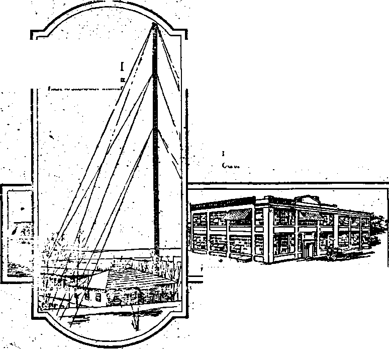

Not. 22,1922, VoL IT, No. 83
fBB ?»(..<«•«* ovary «<Aar . ‘ IkH «*«* at U COaoord Strut, VJJF Broottya, ». F, ff. & 4.
ftv* Ccua * Cayy ILO * Y««
Cwita aad Arata* Caaalilaa «LM
WEDNESDAY, NOVEMBER 22. 1922 Ne. 83
CONTENTS of the GOU)EN AGE
LABOR AND ECONOMICS ..
Coal Dioma and Claro—. . SOCIAL AND EDUCATIONAL . .
403
- There is a Spirit ta Man 103 Why. the Cburchee Failed- 107 Makers of History ' God or Mammon...............10?
'' Egotists ' --—i----104' Fhoto-Pray Writing ,.400
. Feudalism a Failure-------104 “litr- joiw" iPoeni)............109
’ Real. Cadet of ail Wars 105 “Inflnenes, of the Press" '■
Kay tn the Situation—...IOS- (Paesa) ■ - ___118 ."
. •' FINANCE—COMMERCE—TRANSPORTATION ~ Why-' Condone Usury——----------u,--!..._........too."
Value-of th* Employing Bookbinders of America', to the ' ,- Industry---—:---:—--------— --:—X. 10R.'
V - . .. POUTICAL-rDOMESTlC ANfr FOREIGN
Frttu Versailles to Genoa.-------,---------;
Golden Age add. Government—. ...J
, ’■ ' AGRICULTURE AND HUSBANDRY .
9 Here about "Parmen-----—.—-—u---1—
-. . SCIENCE AND INVENTION
. Inmendtar Geological Changes.-- -i-L- ____— —
- Radio DeveiofHMnt^—_— ---.—-——»---
. Reeiia tlng Internal Baths..——__.-—, - .---—
' ’ • . • RELIGION AND PHILOSOPHY
.112 414
■lid
.110 ‘ . .118
ITT
. ’He Great Elusion———: . Heaven aa the Future
' i Home of Mankind' • -cl Final Dtapoeltion of the
. - - Earth——--~:
.119 Tactics "of Mrfdsrn Pharisees_______-— ____1123
.120
Earth aa an Eternal Home 120
Writing a N«*'Blbte.........123
Saving SotUa and Real
Estate.___:____.____:___.123
—.120 of •
—12T.
rntibbsd eery otlnr Wsdamdsy it IB eddeard
Slrwt. Brooklyn. N. T.,
c. h. a.
br WOODWORTH. HVD0IN0B ud MARTIN CLAYTON J. WUODWOBTB ....... r-UUr BGRtaT. 1. Mtmn . ; - . matin ■ wacjsm wm. r. Hunoiwoa......sot ud nvsa
Covsnnsrs ud praeristas, dddna: IB Conard - . Burnt BmkJya. AT......D. 1 A.
Ftvb Cents a Corr —11.00 a Ykab . roiaiow omens : BrttM: 34 Craven Terrace, Lancaster Gats. London W. 2; Canadian: 270 Dundas St W-Toronto, Ontario:. Asatraleriae: 400 Collins St., Melbourne, Australia.' Make remittances to The Golden doe tsmd si aaeaod-daaa natter at Brosttrs. R> A
Films * IV
.. Brooklyn. N. Y., Wadnaaday, Not. 22, 1923 .
. Nuib«» -
Why Condone Usury ? Byw. t. Beds.
THERE is only one great problem before - To do so, society must prevent any persoif or . the world’ today} and. that- is, to stop man group, of persons from exploiting any other
.exploiting man. It matters not whether the person or group of persons ; that is, it must ^exploitation i» done through banker, lawyer, i ' '" ’ ' ......
introduce a social and economic system that
doctorj preacher, merchant, farmer, or laborer, will compel each person to do his just portion “ . . . . . . . of the productive work of the world
if one person takes more than he gives he is
Profit-taking* or exploitation, of the many by
doing hisfellow man an injustice; and any sys- Profit-taking* or exploitation, of the many by tern-of profit (taking more than "one gives) is the few* was the direct chuse of the great unjust. Man should be rewarded for service World War.. Unless the nations-which were inrendered* not. for any power he may have to volved make the abolition of profit their prin-' levy tribute on his fellow-man through rent, ci pal purpose, ft is impossible to see where interest, profits, or. professional power. ’ • mankind as a whole will be in. any way bene-
The reason why the many toil much and get fited by .the struggle. - . .
litj.lp, ■ and the. few-toil little and get much, is -Although usually, fought iff the-name of re-
interest, profits, or. professional power.
liftle, and the. few -toil little and get much, is
because of our business system ? Instead of . bgion or freedom,, practically all; wars have-furnishing capital at cost we have permitted terminated with the. same results; that is, to
furnishing capital at cost we have permitted
. s. system of usury-taking to develop that causes : the producers and the consumers of our na’ tion needlessly to pay billions of dollars yearly - to a small number of our people. We have thus created a system 6f bondage which is the most thorough, merciless and deceitful form of Slavery under which a nation and people have ever been forced to struggle and suffer. This condition of injustice, cruelty and inhumanity has been developed in a country noted as the most free, enlightened, liberty-loving, and democratic in the world, and has come about through a system of propaganda by' the bond-holding class. Through the power of their money they
have been able to keep the common people in ignorance, to poison their minds against truth and their true friends, to control the schools, .. „ .
the press, the courts, and the legislative bodies, duetion!. No!
fasten some exploiting system’not only upon the workers of the conquered people, but also upon the conquerors. Probably not more than one-in every three of our population is an actual producer of wealth, the remainder in some form or other riding on the backs of the producers. . '
It is this continual effort of two-thirds of our population to ride on the backs of the wealthproducers of the nation, and for that matter all civilized nations, that causes not only international wars but labor wars as well.
With our improved machinery, the producers of wealth can now create several times as much wealth per 'capita as they could thirty or forty years ago. But do you.think the producers get any proportionate part of that pro-
—an€ to educate our own children into the belief that the sacred rights of money and property transcend the rights of man and humanity.
One can. read the papers of the United States . and find nothing that deals with the real cause of wars’ or that suggests a remedy to. abolish wars and place civilization on a higher plane.
. Mr. Lawson, the copper magnate, is reported as saying that the trusts watered their stocks
to the tune of $40,000,000,000 to take up this surplus, ■
■ Through our system of capitalization and profit-taking the producers are, at a conservative estimate, mulcted out of two-thirds of all they produce^ •
We are informed that the incorporated businesses of this country have a corporate stock of $65,000,000,000 and a bonded indebtedness of $35,000,000,000, making $100,000,000,000 of secunties on^which the people, are compelled
way of working. You capitalize your $20,000, getting five percent yearly in either interest, / dividends or profits, which brings you $1,000 yearly without touching your accumulated sav
______ ... . ings. You are thus permitted—without touch-i to pay dividends? That represents only ihcor- ing your accumulated savings-r-to live, orf the.; porated concerns.- Add to the above the school backs of the wealth-producers, forever: and. ' district,, road district, town, city, cotmty, state . anon, you and your offspring — idlers, non-J : and national indebtedness, then the short-time .producers, and usually classed as. the elite-of-;
■ Idans of our business men and private individ- ' * " ... .....
oals, and the mortgages given by the farmers : and tenants, and count all as a capitalized
interest or dividend-drawing proposition; and we have permitted a burden on the backs of the ■■ wealth-producers of this nation that they are scarcely able to stagger under and that will sooner or later, if not relieved,, cause an upheaval. ' '
It is estirnated that the total wealth of this
It is estimated that the total wealth of this- jge sure to* get the above proposition clear, -. country is $230,000,000,000- The working peo- . the greatest iniquity of interest-taking is, *
pie own less than five percent of it, and from that it permits a condition whereby millions of, seventy-five to eighty percent of the people ' ' . ... • . .
who die leave no property. It is claimed that
some thirteen millionaires practically own or control all of the railroads, banks, and other great industries of this nation. How long do you suppose such conditions, can. continue! ■.
There is.' a limit, to human endurance, and often it is the last straw that breaks the camel’s back. Therefore it is wise and proper that not only the workers of this country, but also the . lawmakers, should study our financial system, the most outrageous and enslaving system that has- ever been fastened upon a people, and see whether we-cannot devise some way out of our dilemma. ' ‘ .
If one is not a wealth-producer he is a parasite to the extent that he is being clothed, housed and fed by wealth-producers. However, the labor of non-producers is exerted to a more . or less degree in the interest of parasites higher up in the financial strata^ and therefore practically all workers are working to pile up riches for a few already fabulously rich.
To gbt this system clear let us use this illustration: Say that a man is entitled to live off his accumulated savings, which is granted. He saves $20,000. He then starts living therefrom, and ,it takes $1,000 a year. After one year he has $19,000 left, and in twenty years would have’Mevoiired his accumulated savings. But he actually lived therefrom.
However, our modern system has a different society, often despising the wealth-producers who are feeding, clothing, and housing you.
Thus every time a $20,000 bond or other
form of capitalization, either real or watered, . is placed, it means that one average family can live in idleness—-often despising those who pro- 1 vide for them — bringing up their children to ' take the same view of labor«thirt*they" themselves entertain^ ' ’ ’ , ■ • people can live in idleness and luxury, never •' rendering‘a service therefor and usually not ’ even appreciating whence their bounty' is derived. . ■■..\. , . • ■.
How long are the wealth-producers of this . nation going to be- deceived -by this scheme which permits so many of our population to . live in idleness and luxury while every year the wealth-producers are- compelled to work harder and harder and skimp to a greater ex- . tent to carry, a burden that is ever being piled higher and higher! . ’ ’
Do you wonder that our government officials are compelled to make a special study of conservation and efficiency and continually admonish the wealth-producers of the nation to practise conservation and greater efficiency! How can it be otherwise when financial autocrats are continually saddling more bonds,' real and watered, onto the backs of the wealth-producers!
If you want to see peace and plenty in this nation, make capital work for the benefit of mankind, not for the benefit of a-favored few. Toi do this we must take from-capital the power to levy, tributethat is, compel capital to work without interest (usury) or profit.
When a man borrows a bushel of wheat, require him to return a bushel of wheat, not a bushel and a tenth. If he borrows a sack of potatoes, require him to return a sack of pota- • toes, hot an additional amount as tribute. If a man borrows a dollar, require him to return
Ifcv'-
33, 1933
101
full measure, which is one dollar (plus the cost radical; but when so-called civilized peoples can '
and will let their selfish desires to exploit their
of conveyance), not one dollar* and ten cents. _
If the nation needs mfiney and it is necessary fellow men cause them to precipitate nations-to borrow, in payment require only the return into so gigantic and destructive a war. as that of the sum borrowed- That is justice' Stopthis; from which, the world has recently emerged, it system that permits idlers to liyein idleness seems necessary that the people make some . and .luxury while- those who dig and delve live radical changes in their political and industrial in- poverty. Make that the law of the nation, systems. . ■ “
and wfe--will abolish nine-tenths of. all the con- One of the greatest steps forward which they fUdf and turinoil .that now beset, not only onr could take would: be’ to: adopt’ a principle to nation, but- all nations which practise profit'/ which Thomas Jefferson unsuccessfully devot-. Jriting; ?. -. .. . ed. a.considerable-portion-ofJus life; that is^
/ The World War, sifted down.to final cafise^ to make our government our bankers. Then was-for profits,, and nothing else. Abolish our nation could furnish its people capital at-_ profit-taking, and you will abolish war. . cost and thus . stop, this eternal scramble to ex’ khnliftb- p-rnfit-taking, and you will abolish’ ploit one another, which has enthroned a money the labor troubles, that are continually crop- autocracy that is rapidly taking from the peo-ping but throughout the land. . ' . . pie of this nation freedom of-speech, freedom
Can you notsee to the bottom of .this, profit-.-, of press, "and freedom ^of assemblage, besides talcing • systerh that has effectually enslaved all freedom to- acquire an. adequate'livelihood. ...... - - - • ' ’ ‘ " Did. you ever stop to think that a $20,000 bond is far better than -the best chattel slave ’ that’ever lived! ..That a whole family'can live . on the interest derived therefrom! And they
divilized nations 1 Then why not work for its abolition! • . .
It is hardly- right to criticize a system withr out. in some way offering suggestions toward its remedy : - ■’: '
First: We would suggest a system of pay-as-we-go.- Eliminate all-profits—rents, interest
do not even have to be American citizens. How
many hundreds and thousands of European no-_ _ .. . bility do you-imagine ate liyigg from revenue
T and dividends. Provide a non-intefest-bearing. derived from that source! * ’
<. sinking or reserve fund to ■ finance all under- ■ Did you .know, that interest-taking (then . -- takings.. (That system would necessarily do known as usury).became so obnoxious in Eng. ; away with private ownership of anything other > laud four or five centuries ago -that it was ■ a
; • than what one or one’s family could personally - ■ - -
■ ■ than what one or one’s family could personally crime punishable by death to be convicted of
use.• The oqly reason why people desire to own charging interest! ’ Just think what the result
- an excess of what they cannot use themselves of such a law would-be at- the present time.
•’, is that it’ gives them power to levy'tribute on . Do you know that most counties-and school their less fortunate brethren.) - . . . districts in this state. (Washington) pay their
Second: Make all schools manufacturing- help in county warrants .drawing eight percent ' educational plants. Work all pupils over ten interest, permitting thousands of people to live
.. years of age two hours daily at some wealth- therefrom without working, and compelling the
•- ■ - producing occupation, at the same time.receiv- taxpayers to pay yearly $8 extra on each $100 ing instruction in mechanics ; two hours phys- thus paid, simply because we have been taught. ical culture^ receiving instruction in hygiene, that we have to transact our business on a
’ physiology and health;.four hours at general’ ------ - - - •
, book learning. (Imagine the great saving—real conservation-!-of labor that would result there-
■ is that it gives them power to levy tribute on
from if we had 20,000,000 school children work-■ ing two hours daily at wealth production. There would be no reason then why every child in the nation could notfc receive. a thorough education . ■. and continue in school until, receiving every . advantage that can be derived by going to . • school.) •
. Some people may think the above suggestions
credit basis instead of using a pay-as-we-go system! • . . ■
If we ever, expect to change present conditions we must stop electing money-lenders and their representatives to make our'laws, and instead elect true and tried workers. . .
. We should also own and manage our own press; for it is asking too much to expect papers owned or controlled by exploiters to work in the interest of the people. •
Just suppose that about one hundred years
ago Thomas Jefferson’s idea of the government- One more illustration to show that the pro1 '. being our banker had prevailed, jnstcad of the ducers—the farmers and wage workers—are
• Hamiltonian idea' of individuals doing our abject slaves to stock and bondholders is the '• banking,'which was adopted through the eun- statement • taken from the recent book on ... ’mng and astute foresight of the banker and big . "Wealth Accumulation,” by Mr, Klein, New./ v land-holder and commercial element of thatday. .York city’s great statistician. Mr, Klein states i
. . Imagine what a blessing a government bank- that-the yearly interest on bonds in the United ;;
’ ing-system furnishing capital at cost would States is $6,000,000,000, while the total yearly . have been to the early pioneers who . started production of the.fanners is $5^40,000,000;v .? in New York and Pennsylvania and came west- that other yearly dividend and .interest-bear-.
’ ward, stage by stage, conquering the wilderness ing securities, ptQduee : their holders .^i0,00ft^'./^ n-nt.il they at last reached our beautiful Pacific 000,000. Can you- not see;that a system like’ .<• Northwest - . . • that makes the workers, of this nation absolute .
Think of the hundreds of thousands of blight'-. slaves to the bondholders) Wake upand help edhomes that are strewn along-the entire route break the chains enslaving you; .■ We may be./’, —failures simply because they were literally able to do it today; tomorrow maybe too date* ■. eaten up by that monumental curse, the mort- . The producers’ of this nation, have within . gage, with its interest-devouring claws, which their power the means of emancipation from could have been avoided if our government had the above curse. That is. through cooperation done its duty as the people’s banker* and a judicious-use of the ballot, electing offiL- .
Think of the thousands of. noble and Self- cers. from their own walk of. life, adopting . sacrificing men-and women, the flower of our proper laws and putting into operation a sys- • land, who grew prematurely old and died with- tern of government-owned banks, railroads, out seeing one ray of /he peace and happiness public utilities, manufacturing plants, and- nat-they so richly deserved—all because they inno- oral resources, to be operated for use. instead cently placed their faith in the ever-grasping. of' profit—for. the benefit of all-the people in- ' and unscrupulous money-lender,' instead of stead', of a favored few. Shall we avail our-banding together and. working cooperatively ■ selves, of this opportunity or shall, we feebly for the benefit of all, and placing service, well- submit to the crushing power of the.most mondoing and brotherly love above profits. - . strous'curse of all hgesr . ":
their families have been evicted from their homes; which have since been occupied by strike-breakers. ’• ' ‘
A few .days prior to the strike a group of Polish Bible Students was forbidden to hold a Bible study or lecture bn company property unless they would agree, to urge the men to ’return to work. The priests and the preachers generally are accepting these propositions,
The wages of a miner average $725 per year. While on strike they cannot buy a pound of coat from the company, at any price, and of course their living conditions are deplorable. One of their quarters is a barn which measures 18 ft. s 18 ft., and which contains a small hayloft. The barn contains seven beds and twp cradles in which, besides adults, twenty-six . children sleep. Some sleep in the hay in the
HEREWITH are a few pictures taken at Herminie, Pennsylvania, It was my privilege, to be sent there by the Detroit- Polish Bible class to distribute: a collection of $213.55. among the Polish Bible Students at that place. The miners there are on strike because their employers-broke a contract. The Prophet has said that this breaking of contracts would be a feature of our day. ‘/They have spoken words, swearing falsely in making a covenant.”— Hosea 10*:4. . . '
The Roman Catholic priest at Herminie, is urging the men daily to return.to work, trying to-make them believe that they are Bolsheviki . because they are on. strike. He is at liberty to go anywhere he pleases on company property. The homes of the miners were situated on this property, but since the strike all the miners and
top. of the barn. I send a photograph of the barn exterior and. of a section of the interior; .also a photograph of a, tent in which, some are Eving;and one of a little shack, built of all r|i?es.pf hoards picked up at random, and used., .tar cooking and sleeping quarters. This little difiaek;ha3s the-bare ground for' a floor. Where j^re. the clergy, with their message of comfort 3otheee people? .'Instead. of comfort they have -shaken hands with those that "oppress the hjxe-^Hhgin his wages.”—Malachi 3:5..
/\At Mt Pleasant-, Pennsylvania, the - priest ' blasted from his'■ pulpit that he was' a stock-' holder in. the coal company* and-that the men
-would, have to work. This fulfills prophecy; ,-feritjs written: “The priests thereof teach for ’hire” [stock in coal companies, etc.], “teaching /things which .they ought- not,’ far filthy lucre’s Jiake.”—-Micah 3:11; Titus 1 <liL .
A: As* reported in the Penn Central News.of i April 18, 1922, John Luske, a miner of Clar-
ence, Pennsylvania, who was o® strike, was arrested for a murder'of which he knew nothing, was put through the third degree; and when no confession was forthcoming, they sent for a eriest, a local pournciAjr/and a coal op-bbator (the unholy trinity); and- also Luske’s . wife; to force a confession of a murder which
he did not commit.; ’.•..*. ' _
- The Pittsburgh Press of: June 23,' 1922, re-. ports the bitter denunciation of labor unions by Reverend W. L. C-Sampson^otthe Fourth. U. P. Church, at* the regular quarterly meeting of the Monongahela Presbytery, U. P. Church.
The Pittsburgh Gazette Times of July 31, 1922, says that Reverend D’r.E. Edward Young, of Brooklyn, N. Y., discoursing on the subject of ‘‘Who Will Be First?*’ scored the strike as - a- weapon which - should be. crushed, - and after the’discourse, left to take up his. duties as chaplain of the-14th Infantry Regimentof the New York National Guard. ’? . ;;
i•. “There is a Spirit in
; pLIHV, the son of-Barachel, many thousands /- ■£4-of years* ago, was right. There i® a spirit . in. man. In Elihu’s case it was an intense de- j '. sire for self-expression; he desired an oppori ".tunityto speak concerning the argument that "absorbed his three companions. He had long -endured in Silence out of respect for the ad- .
vaiiced years of those with him, hoping, thereby to learn wisdom and- acquire knowledge .’ which only; age possesses—that- wisdom which '• comes a$ a result of experience, and which acts ■ as a protective armor against the hasty utter-
anees and rash acts of youth.' - * •’
J ■ But ; Elihu had been vastly disappointed ' and disgusted with the sounding phrases and meaningless-platitudes of those with him who claimed to be comforters of their mutual friend, Job.. 'Arguing from-a wrong premise most of the time, these hoary frauds had ceaselessly attempted to convince Job, against his better
J- sense, that the evils and miseries which had ' come upon him w;ere, of necessity, the result of sin. . . . ‘ .
' Elihu "Anally rebelled, as he says: “I will answer also my part, I also will show my opinion, for I am full of matter, the spirit within me-
Man” By D. IL Copeland.
‘ constraineth me; Behold, my belly is as wine that hath no vent? it is.ready to burst like new . bottles. I will speak that I may be refreshed:
I will open my lips and answer.” • .
If Elihu had lived today, he perhaps might . not have waited so long for the old boys to say their long-winded pieces and get through, but in aD probability he would have put his oar into- the conversation right from the beginning, speaking, as does our modern youth,-with that fine and inimitable contempt for established custom which is the outstanding feature of modern progressive thinking; fot this truly is the day of Youth-, in every department of public and private life. -
• And it really is doubtful whether pur modern man; with all his ideas of the importance of the modern young man in general, and himself in particular, could get together .and logically present. as good and sound ah. argument as did Elihu on that occasion, as stated in the .32nd chapter of Job. .*
However, this is merely a preface to the- discussion of a point which is of some slight in. terest to the writer, and may be to the.reader, which is, that there is a spirit in man which is
showing itself more prominently today than ever before in the world’s history; a spirit which has a multitude of expressions and which, in one or other of its three main manifestations, is showing itself today in the actions of every ' man and. woman of the age of accountability.
. It is again the same spirit of self-expression, and in the. effort to express oneself, all the good, bad' and indifferent qualities that go to make up a human being show so plainly that
-- he who runs may read. ’ . • ,
Makers of History Egotists .
THE world’s history has been made by people who demanded the right to express themselves in word or in act. Sometimes it was the silver-tongued orator who s<S worked on the minds, of others that he succeeded'in convincing ‘ them that his particular road to some summum bonum was-the one and only road which could succeed; and. thus he achieved his own ends through the instrumentality of others.
Again, history records the exploits of many swashbuckling adventurers: who, being in their day opportunists, achieved, some measure of self-expression, usually, at the expense of the common good. Other self-expressionists bear names that, struck dread into the hearts of an entire world in their little day—such great ones as Genghis Khan, Tamerlane; Alexander, Mo-hammet, and Napoleon, who wrote in letters of blood the record of' their mighty egotism- '
Some few years ago another ego became swollen and bloated with his demands for selfexpression; and finally, through a series of circumstances which were so opportune as to be almost miraculous, if they were not skillfully engineered by this same ego, the long-looked-for chance came, and again in an effort to carve ' a name long to be remembered in history, Europe was bathed in blood and tears, and the fingers of sorrow stretched into every corner of the so-called civilized world. '
What the result of that effort at self-expression was,‘"we all too sadly know today; but the lessons of the “old men” of history fall on deaf ears, and in the thousands of years, which have passed since Abraham went forth to the slaughter of the tep ki$gs, and Lot’s herdsmen strove with, the herdsmen of his uncle in the .land of Canaan, the Vorld has found no new or better way to settle its difficulties than with battleaxe and sword.
Of course, civilization- is a wonderful thing. . The writer of this article would be . last to . deny that;indeed, he candidly admits that it ia. . a fearful and wonderful thing—so fearful and' wonderful that to face the prospect of seeing- \ it forced upon the rest of the world bf mankind,. '
; those at present outside the paleof its-infiUence, ' ’ is too painful to be- looked at-with equanimity;
... A very cursory .glance through the pages of ; H history, which led ‘up to: what we are today V J
• pleased’ to - call. civilization, convinces one that ■ no really good thing could be the product of" -such blood and agony and- tears as -f aceus from the past, the progenitors of our present-day -... conditions. “Man’s inhumanity to man makes countless thousands mourn,” was an expression " coined to fit a situatioii of a' generation ago,-. bfif how more than true it is of today! . - ■ . ;
Dickens, Thackeray,, and'other writers of a -.* • bygone era exposed many glaring injustices and intolerable conditions in their land; and • "• remedial-measures were taken just in time to. ward off and divert the great industrial revo- . lution which was brewing. . . ; ■
The United’ States'was- not so fortunate;, but
• the voice of the Negro slave, made coherent through such men as - Wilberforce and Lin- -coin, at last was heard ; and a nation-went^ to _ war- with- bitterness and- hate,- destroying al
, most two millions of its finest manhood and setting' back. its- industrial development many years. ' •
. Feudalism A Failure '
CENTURIES ago, long before America was discovered or thought of,, there- was.a condition. existent - which we term “the . feudal ■ system.” This consisted of a social order clearly divided into two distinct; parts, with a third superimposed on both. The.landowner or “baron” owned everything in sight, and Spent his . days in devising ways and means of acquiring everything else that was not nailed down. ’
Beneath his beneficent rule the “serf”-eked out a perilous existence, tilling the lord’s land and raising his cattle and horsey and incidentally rearing his children to perpetuate the slave system. •
Then there waS the “army” Which was composed largely of the native-born serfs who found it easier to live on the baron’s bounty and make what they could on the side from the frequent raids on other land-owners; and often
an admixture of paid soldiery,“mercenaries,” as they were termed and “soldiers, of fortune,’* yrho Were quite useful to the baron in. enforcing • hasdemands upon his own serfs, and seeing that-they were-kept poor enough to be humble. Thisarmy was the secret of the lord’s power; fq^ without- it he was helpless and his. com-' B^n^k'were ofno avail, so-that it was the con-jstaht endeavor of each baron either.to annihi-jlate or. fo steal his neighboring baron's army, knowing: that with it went his power, and in-hidentally his lands and his serfs. ...
*-;This. was- a.splendid period.of history called, and rightly, so, the “dark ages,” daring which Ehglandadvanced not at all except to perfect ■herself in-the noble art of land-grabbing, which • art has stood her in good stead in the years .that have; Since passed. ’
Beal ffauee of all IFars ' '
- A LL Europe went through this.routine at some ’**• time-or other; and in the “Renaissance” which followed, each nation vied with nation to see how much of the surface of the earth could be grabbed and held; for it'was discovered that to seize a. thing, did not necessarily mean that •it copld be kept, as. the example of Spain, in the New World later showed. And also the severe rap oh the knuckles that England got ‘over the colonization of the land wliieh now we call the United States enforced the lesson .that she also could bite off more than she could chew, on occasion. •
. This last-mentioned event , serves as a. good illustration of the meaning of our title. America stood for just"so much from England; then . she also “swelled up like new wine” and demanded, speech. Of course such insolence merited punishment; so the good old sword and axe were called upon, and the quarrel was settled as usual, after—it is always after—a number of decent citizens had been killed and the country’s industries exhausted for many years.. Wherever there is a war, you will find the old-gag about protecting “sacred institutions,” and the “inalienable rights of man,” and usually too, something about defending the “sacred faith of dur: forebears” and so on, ad infinitum
’ —all the1 shopworn political flummery which is-trotted out whenever the “barons” want to go ‘on another land-grabbing expedition and desire the help of the “serfs,” brought prominently to
• the'fore; the “hatchet” buried again when peace
is declared, until the next expedition calls, for it to be refurbished. • ■
In modern times we have the events in Ireland. At this present .writing the .Irish situation is about as .clear as mud—and getting, no better fast Right after the European war , seemingly Ireland thought it a good time really to start something.. For many years she had been “swelling, up” like new wine, and a number . of minor explosions had served to keep her constantly at boiling point. Finally the smash came; and again after a number of people had -been killed and maimed, and business ruined, England made, one of her famous compromises, ' wherein she gave Ireland two-thirds of what she wanted, and withheld one-third. The result was that a rough and noisy minority of the Irish figured- that .if old T^trly England could be forced to give up two-thirds, she could als'o be made to hand, over the other third, and the' war went on more merrily , than ever, because now, instead of tWo factions fighting, there are.
. three; and presumably if some arrangement can be made about these, conditions, the good .: old axe and sword will he.shined uprfor a footer five-sided scrap. Apparently the multiplication of grievances in Ireland is in direct ratio to the amount any side gives in.. . - i
Key to the Situation. .. ■ . '
Pl- THIS fair land, of ours, we have Mr.
and Mrs. Trouble in. the shape of railroad and coal strikes. There is a possibility of their both being settled in the immediate future; but, in the meantime coal is not being, mined and we are within a few weeks of cold weather, and railroad equipment is running down to such an extent that when there is some coal to haul, the chances are that there will be plenty of trouble getting it to where it will do. the most good. Incidentally the harvest is bn in many sections, and crops cannot be moved in anything like the quantity that is necessary for the well-being of the country. Truly, there is a spirit in man— and a devil of a spirit it is these days. ’
Now, I suppose that some who read this will say: "Aha, here speaketh the Bolshevist!” But not so, my friend. The writer of this article is by no means a Bolshevist'nor in sympathy with them, nor even a Socialist, as such is generally understood. Just look at the situation calmly for a moment, and fry to figure out a solution. I realize that there are as many so-
»■
lutions as there are people guessing; but when you come right down to brass tacks, where does the trouble really lief. Take for example the two main elements, Capital and Labor. Labor . , waves a heavy fist and curses Capital luridly, blaming.all the sins and follies of earth on the ’/ Capitalist system.- Capital, on the contrary, ; lays all the blame on Labor. jSo there you are.
Which is right! You will answer, this, question- , _ .
just according to where your sympathies lie-^-’ labor with the hands so that a few can bask in/"-and in that very fact you have, the hey to. the the luxuries.that wealth makes possible/ Ncrw,-,
. situation. You, Mr. Ordinary Citizen, are the Mr. Private Citizen, where do you stand in this answer to the whole problem; but you don't see problem! ' •'■. ; . ;. /.;. . ;
it, or won’t see it. ._•• - . I have seen you by the hufidred thousand ini
- This new war between Capital and Labor, the subways and*the elevated trains^ ip the.Siir- / " new in the sense that it has now become the /ace cars, in your Henry Fords,in the cross- / chief issue of the-day, is fought between/two. /roads grocery and the small town ho tel,and on' minority groups, just as the power behind all the?street in swarmihg masses, hungrily readwars has been in the minority. Actually history ing ydiir newspaper to see what the* end of the”
' proves .that the voice of the majority is seldom strike will be.' There is no very deffnitely-forin-heard,, except as it can be .used to express some ' ed opinion of the rights of the.matter ih ydur desire or aspiration of an active and violent' mind. There cannot be, seeing that the press .
; minority. These two groups are forcing before ' - - . ... .. ... . - .
the people an issue which does not actually af-feet the mass of the'people, except in one sense.
// That is, as individual sympathies' are excited' ■ by the plight of either groups we.lend our par... . tizan spirit to. the acquiring of whatever that ; ’ ‘ group may desire. '• -
- Indifference io Others* Woes *
SO TODAY, the issue is not one of hours and . wages on the one hand, and dividends and . vested interests on the other,, but rather it is ’ again the demand of the individual' for selfexpression. The man who has money thinks that.he has a perfect right to use it as he wishes, and accordingly proceeds to do so, much to the chagrin of the man who has none. - :
The rich man buys a coal mine, and offers ■ to employ the poor man to mine coal The poor .. man accepts the offer and mines coat The rich man suddenly changes his mind about the price he will pay to have his coal mined; and the
poor man forgets himself, and starts .to burn
up the"mine property and dynamite the. rich old feudal days had refused as a mass to suffer man’s home and do sundry other nasty, things ' further at the hands of the few barons, how
to show his independence of spirit
The rich man has recourse to the old and well-tried remedy, .the arm of the law, as- exemplified in the standing army, which is. composed of ex-coal ihiners in all probability, who forget ‘ that they are common people like their brethren, and willingly lend their aid. to put doWn . all exuberant manifestations of independence : of spirit with the. old, civilizing axe and sword. ’ • ’Twere ever thus; and so the tale would be told,// over and over again,, as. it has Been in the past, /. except for one thing, whicK one-thing we shall/
shortly point out briefly. . / '
The same principle applies te the .railroad ;: workers, and to/the rest of their comrades’whq '/ is under the control of the capitalist;. and fur-
thermore I doubt whether you would take the ‘ trouble to find out really just what is the mat-ter—fundamentally, I mean. : .- /.' ’
Rather, you will be glad when it’s over; and you'are sure that you can get enough coal this- ;
winter to get by on p and if you- are a-small • shopkeeper, you probably give- a ' fleeting ,* thought to the possibility of the price being higher on account of the shortage, and men- .. tally decide to boost the price on a few cbm-modi ties to cover the difference, thus passing ' the buck along a little further. ’
But as to your personally expressing,a decided opinion one way Or the other, np, sir! . It’s none of your business, you say, and let it . go at that. You have not yet realized that it has been the apathy of the private citizen all . down through the ages which has let the abuses from which the world has suffered so much and ' so often take- such a toll of the lives and happi-
ness of the people; ‘ .
Suppose for a moment that the "serfs”, in long could the baronial system have endtired! Such a day did finally arrive, and the power of-the baron was broken'; but it was" not until the power of the standing army and the forces of • law and order were divorced from the rule of money, and placed on the side of the majority.
? Suppose for a moment that the entire armies Of the world had chosen the more honorable
<t»urse of being conscientious objectors to going out and slaying thousands- of honest working then of other nations with whom they had no' personal quarrel, could there then have been
are owned body and soul by big business, used by that institution as part of the club to keep you in subjection. . ■
Churches were splendid. recruiting stations during the war, adding that air of sanctity to
_..... , . . thefilthy-business of war, the trading in corpses
■ fha’unhappiness and destitution which the last and graft andcorruptionof war contracts,which ... great-war brought to Christendom! ’ ' 1 -.-. was needed to make it acceptable to the more
Suppose for one moment that the minisford. sensitive of the .people. And now they are good ■bl'dur churches .had really preached Christ and s0^-a^ centres where the doctrines of big -husi-the-.love of- God,, could the capitalist have so ■ ness introduced into the minds of the. ... engineered them that they would have. willingly yottQ8’ n*’ uu. easy and apparently innocent- , flepred the devil .as they did, and jjreaehed mil- manner. . And-YQU, Mr. Citizen, are content to lipna-of hoys into' an awful and useless death! have, it so. ■ ...
• * ' ’ ’ ’ You do not dare, or* are too lazy, to think
‘ Suppose for a moment that you today were to take an intelligent interest in everything .that intimately affected the lives of your broth-ers,‘ whether. they were in your particular
for. yourself; and if you do, you let it go at * thinking.. You Maye hot the-moral courage to stand onyoUr hind legs and talk right out in .
, ■ • V - .u i ■ , j meeting about-these .things^ No;. you. would
d° religious matters at'all, than you would to get
no!' Because you are not the one that is being God or Mammon?
^.directly hurt, it is easier, to let the whole rotten • _______ . ' . ~ . ..business continue, rather than that'you should V k it w the Spurt
be disturbed and put about a little to rectify it. ‘ of Selfishness, The Golden Rule is a thing of - ' - u. . ,..x, , .',, • the past in the business and: social life of our
■ .Rather you wouH^see your little children fConsideration for the rights and privi-again; in. the grip, of the profiteer, forced to j g pf othera is contained in the terms of the ‘ ;Wprk again m dhe factory by a court-ruling eonstitrition bat that’s the only place it can
T^S t02VeT 1”telhSent ™ter be found—there, or in the dictionary. We have
the United States, than that you would make - .... . . - .
lost the art of being’magnanimous as a nation;
■ yes, as a world. • ’
■ “The survival of the fittest/’ is our cry today,' and the weak can go to the wall; and so we drag along, in a dog-eat-dog existence, al-
.active and determined efforts properly to take care of the situation. . . . •
, . OH! you say, what’s the use! Every leader we get we find out is a grafter, and a tool of the-big interests; or if he isn't at'first,' he ___
ways' with an eye on the. main chance, hoping
_• . •- ' »» w ’* * *** **** -w J v** vaaw. ******** **v*kzi**M
speedily becomes corrupted. Granted that in- by gome fluke to be able to get on top of the the majority of cases this is true, yet that- is- heap and join the ruling classes, and willing to nd-excuse for apathetically accepting it. use. anything as a stepping-stone toward our
• ‘ vaulting ambitions. •• . .- ’
Why the Churches Failed - gpakespeare make his character of. Wolsey,
rpH^ case of your.church is a shining ex- in “Henry VIII,” use these words: “Cromwell, A ample. Anyone with a grain of sense can I charge thee, fling away ambition; by that sin ' ’ ’ fell the angels; ho,w can man, then, hope to win
see that the church today is rotten to the core. Why!. Simply-because you have been content to have it so. "Give us teachers that will pander to oug pet sins, and make things easy,” you have cried; and the weak-rkneed ministers have given you just what you asked for. When you have ceased to support them properly, they have sold out to the opposition until today they
by it i” And again: “Had I but served my God with half the'zeal I served>my king. He would hot in mine age have left me naked to mine enemies.” . . . ■ ; .r
This heartbroken cry of a dishonored man, dishonored for one of the few decent acts of his life, is terribly true today of most of us.
Did we but put the things that are eternal into their proper place in relationship to the rest of our daily lives, how much happier could we
- I* I
. But God is far from us today; our lives are lived in the cellars of our minds, groping for the material satisfactions in the muddy dregs of existence. But those who have an . ear to -
hear, have heard the solemn notes of the bell : of time, tolling the death knell of this present.. rotten order of things, and giving glad prom- ■ ise of a better day at hand, when men will have -*••_ a fair chance to love one another as brothers';-, and neighbors, and the spirit in man will ba ‘ that.of service one to another. Thank God.for\< the’promise of His incoming kingdom! * •
PHOTO-PLAY writing is now one of the have seen a story begun on'the-screen, can you established artsi Since certain individuals depict events leading plausibly to a elnnuxf',' have achieved distinction and acquired wealth Are you able to picture ^raya for people to. ex-by writing scenarios, many ambitious persons tricate themselves when you see Or. read 'of ', have sought to master the profession. But not . them in. dangerous or perplexing' situations f ■■ all who make the effort succeed. Before any one . Have you sufficient sense of lyimbr to imagine. can write a photo-play he must understand the ......”* - - - •
■ primary laws and rules governing their con-
struction, And, above all, possess some talent— some individuality coupled with imaginative and creative ability. .
I will explain how one. may know with cer- . _ _ _ . .
tainty whether or not he has talent* for this in .mind. On the screen is truly a place where
> art and, if so, how it. may be developed. Mail-: "i " ’ ’ ’ ’’
order sharks have extracted as much as one hundred dollars.from unwary victims for similar information no better than my own.
- '"First before, they could accomplish this feat, scenes. This at once creates interest in your however, it was necessary-that they entangle story and Stimulates the imagination. * ■>.
their victim’s mind in an hallucination. This ■
result was achieved by stimulating the irnagi- .... .
nation of their prospect to a point where .the . serted in the upper left-hand comer. After you
achievements of others seemed easy of accomplishment in their case. Hence on this account all should realize that there is no “royal road” to learning or to success in any other worthy, line of endeavor. Reward conics only after patient effort. . ■
I. would not encourage anyone to attempt to . realise the impossible. Yet all valuable infor-matiou should be dispensed, free for the profit and benefit of all. The following should be of much value to those who have no latent talent - as. well as to those who have. He who must-answer these questions in the negative should-not.attempt to write scenarios; for his talent is- not sufficient to merit development.
. Can you read a story halfway through arid then imagine a logical outcome! After you tridate themselves when you see or. read 'of an originakjoke! If you have honestly answer- ’ ed-the. foregoing, queries affirmatively, you are. now. ready as a prospective play-writer to consider the laws which must govern your writing. ■
You must from the first remember that ydur ' story is to- be told by action and ever keep this _• "actions speak louder than words.” - Build'yo.ur narrative around an original thought This may'' be called the germ of your story and should be ' exposed—made known—in one of the opening
Your story should be written. on letter-head* ; size paper, with your -name and address in-have. written the title of your play, then give .
underneath a .brief synopsis of the whole, followed by the cast of characters. Your play proper will consist of any number of- reels according to the length of your story. Each reel or part is made up of scenes. .
The’number of scenes which can be used in a reel depends upon the* length of time required to show each scene ; but the average number is about thirty. It is important that -you .have.. these scenes blend intelligently without. confusion or break. Written explanations called ’ leaders may occasionally be used to precede , scenes. But these should be inserted only where necessary to carry the thought. • '
The foregoing only outlines.some of the prin- . ciples which are found to govern all successful
writers of photo-plays. Hence the. prospective writer who would achieve success should give careful attention- to the plays screened at his local theater; and, above all, he should study pver the- -printed scenario of some successful --play.' This will help one to understand more. of the- technique of photo-play writing than all 'cither'. explanations, oral or written. - '
£.-jQiap of the most successful printed spenarips qnd' one which is obtainable at lower-cost and ’Jes^ difficulty".than, any other is- the- PhotoDrama of- Creation. This well-known scenario iis the product of onC of the most successful 'jrriters of our age—Pastor C. T. Bussell, now 'deceaseds It has been screened in practically, evOrypartof the civilized world ; and so eri-’thusiasticaily have the people received it that-iit many of the larger cities it has been repeated time and again. The fact that it treats on a Biblical subject does not decrease, but rather ^enhances its value and interest . • ' .
. ’•*, The geitn around which and out of which all .other action in this play comes and revolves is. the thought of creation. The Supreme Being .began His activity by the creation of the Logos, through whom all else was created, including -bur earth. The Photo-Drama focuses attention upon the. creation- of our original parents and events that resulted therefrom. It depicts their 'fall into sin, and.shows how through them the trhole race was involved in degradation. It further depicts their deliverance from sin through, the Great Emancipator, Christ Thus is shown how the whole earth is to be brought .to the designed Edenic condition. .
Consciously or unconsciously all-other photoplays revolve around this central Drama of Creation. The Creation made possible the existence of all activities terrestrial or celestial, human or divine- God’s laws define their scope
and determine the length of their continuance. ■ Hence all budding photo-play writers and . other aspirants to the motion picture industry. y-ould do well to align themselves with the ’ ; future march of progress. Human sentiment ia . fickle, and to obtain its favor now does not • mean anything in regard to one’s future. In the near future the motion picture industry . may be expected to be- revolutionized. r .
The ancient worthies, including Abraham, ■ Isaac and Jacob, will’ soon be- the directors of.. this industry and will’accomplish things hither- ‘ .
to unthought of. The sky is a most natural " . background, and in, the future will serve as a screen on which the most, perfect and' interest- ' ing plays-ever presented to the world may be expected to be-shown/ These noble worthies will have multifarious duties, and will need a corps of assistants to carry put, the. details. Hence it is well to aspire for some of these worth-while positions of the future. These are days which hold'forth great possibilities.
The god of this world, Satan, realizes that his usurped rule has ended. To ensnare as many as possible he is holding forth many dazzling allurements; By this means he seeks to absorb , the time and-.talent of righteously inclined peo-pie’ in . the’direction of acquiring present fame and wealth. Those looking forward to a more sure reward should not allow themselves to be -thus entangled.--' , ..... . -
A word to the wise is sufficient; but a word from the Book of Wisdom is doubly faith strengthening: “Lay not: up for yourselves treasures on earth: . . . But lay up for yourselves treasures in heaven.”(Matthew 6:19, 20) As far as lieth within you, bend your dramatical and photo-play writing talents into alignment with the future -r into alignment with God’s will concerning, you. .
BIG JOBS bv Charles Horace Sfeiers
|
' ’. When you- have a big job waiting, ■ ; Standing grimly in your way, •' And you spend in hesitating, . ' Say a minute or a day, • . You have just set back the gladness . • • Which’ accomplishment bestows, ' And are entertaining sadness, While the big job bigger grows. |
When’you have a big job standing On your pathway to success, ■ t Valiant toil of yon demanding. If you bravely onward press You will find that you can do it • - Somewhat easier today Than, if burden you lend to it By indulging in delay. |
. ' By W. B. Conkey . ’ ;
(Mltariwl Hotel The W. B. Cdnkay Compkay of Hammond, UkL, 1» probably thalavgw* publishing and bookbinding Inatttutios tB-the world. The company aanploya many man. Its President.; Mr, W. B. Conkey. han been the head of the Institution since Its . organisation. For many yean this company published thw “Studtea tn the Scripturea"- and otb*-publication* of the; Watch Tower-. . BIMo A Tract Society. Recently at a convention of the. bookbinders of America. Mr. Conkey delivered an addreaa. We bavm* pleaaura la reproducing this apeerh It la (ratifying to note that a man who has. ao well succeeded In baalneas end a large ■„ . anpfoyer of labor takes aneh a high and noble stand in behalf of labor and tnalats on righteousness being the aula by which . .
matters between labor and capital shall bo settled. Wo heartily agree with Mr. Conkegr that brotherly .love must -be practised' bo-1;' - tween both parties add that this must be founded upon justice for alT before these dMRulties can. bo settled. This condition at.. peace and unity amongst men will be brought about by the great Messiah's kingdom now being established. Other employers, bow-
ever, will read Mr. Conker's address with profit.) . • • -* • ■ :
— 11 Th. President and Gentlemen :’. When I its workings have assumed such a wide: sebpe^
’ XVJL was asked to address -you I requested ■ -covering all branches.of our industry,-.that-th<<
that the subject be one of wide latitude, so -■— ■J-- :xt-’ -
- that I would not be confined closely to a sub-
ject, and the one selected for me to speak on fully covers that point; for I am sure that the . value of an organization of this kind to the ■}: bookbinding industry of America is most- im. . portant .
-, ' Organization of employers among the various industries of our land has grown’ to gigantic proportions, and the benefits derived • have been far reaching. I am sure that this < same condition will exist in-the Association
. _________ ._T _____ . _____ ________ binder to collect these sheets and form them'
/- of the Employing'Bookbinders of America into a compact and. beautiful volume that would, after its work and results become more defi- ... - - - ■
. _____ ___ ____ _____ ________ _____ . ____ ultimately grace-the shelves of_the.famous li-. ■
, nitely -understood by its members, and it.will -braries of-the world. ■ , •
V.' be a great power for good to the craft There is nq. inore honored or respected yoca- •
-.... There is no trade that has a better, license ~tion in which men are engaged than the manu- . -:,’ to organize than the bookbinders of -America, factiirg of books; and it should take its place
They have not assumed the position that right- among the leading industries of the land and .fully belongs to them, because they have, in a - assume the dignified and exalted position which- ; measure, relied upon other organizations in the rightfully belongs to it in being the foremost-
' allied trades of the printing industry to lead . them. But the time has come, as has been shown by the results of this organization dur' ing the past three years, that the bookbinders of America should assert themselves through the form of ah organization sv.h as we now have; and by the right of its necessity to the allied printing trades and the dignity which belongs to the era it by its being first in the art preservative, it should be a leader among time is ripe for.'this organization to give-’to members detailed information and active Help/ ,J that pertains- directly to the trade in which we-" are all. interested;.. ’ • •
trade organizations. ‘ . pression, in that it has shown that our business
The printers’ organization, The Typothet®,. ' ' ’ ' - - - - -
which ^has gained great prominence by its splendid" work during its existence in the last several decades, is foremost in its educational
development; and it has been a lasting and powerful good to the printing fraternity throughout our land. Its activities have been
. 'a source of great benefit, because of the infbr- ;
. mation ana reliable data which it has collected, and which information has been spread broad- । cast throughout the printing fraternity. But '
From the earliest days of printing,, the bind- -; ■ ear’s art has been ‘a necessity; and while there. '.t should be ho attempt to dim the lustre of the- s' -glory of Gutenbergs the-discoverer, and Ben-'.fy jamin Franklin, the patron saiht of the. printer, their work and their printed sheets would' be ■, ' almost worthless without the skilful hand of the ~
leader in preserving the art and literature of the world. - • . -
Without the aid of the binder, the schools, .. colleges and universities of our land could not . exist; and in almost every function of the ' , world’s work the art of the binder is a most . important factor. • . ■
. The experience of many of the leading eon-cerns in our line during the last few years has been a lesson that should make a lasting im-could be made profitable, and that as a business it is entitled to a legitimate profit.
This organization can do more to educate the master bookbinders to conduct their busi-nc-ss in-order to get ar proper price for their work and to create a. spirit of friendliness toward each other than can be accomplished- in ' any other way. Meeting each other and knowing each other will hep to eliminate the fierce competition between each other, which means loss of profit, loss of temper, a hatred of our-
■ selves, the business an eternal,grind, and life, hardly worth living. .
• Truly the-workman is worthy of his hire; fully watched the-labor situation. I have paid 'and there is no business that requires more attention not only to the printing craft through painstaking detail than ours. We are entitled the Typothet®, but to the building and other to a 'legitimate profit on our investment and- trades as well, and there is no-question but that labor; and if we will all use the information the labor unions have been a.very potent factor-that tean be obtained by cooperating with each for good in the advancement of civilization, ’other through this organization, and.’all pull Unprincipled employers have ground the ^together, the bookbinding business can be made h6el of despotism upon the heads of their em-.0 attractive-for investment and pleasurable ploy4s, making the-burden of life almost un- • operation as any industry in the land. •" beatable. Long hours, unfair wages, sweat _
The question of handling the labor situation shops, and child labor have forced the vindica-as 'probably the most difficult problem that con- tivfe spirit of the working" men to acts of vio-f ronts the'master binder of today; and, as I lence, until they finally realized that by might stated before this assembly three years ago, I and force, through the element of the strike
am unalterably opposed to “Legislation with- and the club; they could accomplish the pur-out Representation” either by the enployer or pose which they were .after. '
jthe .employe, and in my humble opinion-, the The employer paid comparatively no atten- -■ employing -bookbinders should form a -Trade- tion to the conditions- which were arising un--Tnndn, which should be composed of repre- til, in-its mighty force, this condition became
seniatives .of both the workmen and the ,em- ..... ..... . ..
ployers, who should agree on all regulations,
and there- is no business that requires more rules; and wage scales, and the rulings of this body be final and binding on both parties.
? While the ’ Open Shop is strongly recommended by many employers, it is not by any 'ideane a lasting settlement'of this problem, for -the reason that there is the same opportunity \forthe unfair employer to take wrongful advantage of his employes, as there is for the unfair workman or so-called labor leader to act
, and deal unfairly with the employer. .
cedure must come from the Trade-Union, the purpose of the meeting is to arrange an - - - - - ... . amicable settlement of matters of vital inter-
the contract. _
.’ : This, gentlemen, is simply an outline of the the loser, by the endeavor to force an exorbi-planfand its details could be worked.out carefully by a1 committee of this organization in
The- workmen can have their union to discuss matters and formulate plans in relation •to .their trade and its workings, and the em-^ployers can have their association for their . discussions. But any action or plan of procomposed of delegates, from both, the employer and employe; and each must be a party to the ’ contract which is made to cover all conditions necessary to the successful conduct of relationship between the employer and employ^. A ‘ violation of this contract in any plant by either party will mean the concern of all parties to connection •with a committee of the workmen. I fgel positive that a plan of this kind could be materialized.
I have been active in this business for over forty years; and during that time I have careso strong-that it was able to "strangle the ac-
tions of the employer and. force the business, of the world into a chaotic condition through strikes, lockouts, blood-shed; and even murder, as we have, recently seen-in the railroad • and coal strikes, which almost tied’up the commerce of our land. . ■ \ ’
The attitude between the men who employ labor and, the men who .are employed should be one of conciliation and regard for the. welfare of each other. .
As a rule when bodies of workmen and employers meet to talk over the problems of interest in their particular trade, there immediately develops the spirit of antagonism, as though each were trying to take advantage of the other. This condition is entirely wrong, as est to both parties with the result of establishing peace and harmony in the industry; and yet How often this fails.
’ Think how foolish this whole proposition is. It is the’ customer that pays for the commodity that is to be produced; and in many cases the workman is that customer.; So he is directly
tant wage. -
The workman oif today is entitled to a proper compensation that will allow him to live comfortably and to save enough to take care, of his declining years, if he is so disposed. The world
acknowledges the importance of this condition .today, and the only point of discussion between the employer and employe is to find out a proper compensation for the work to be per-
world, ulust realize that the divine unction to “love thy neighbor, as thyself” really means something ; and while, the railroad and coal strikes have been settled, they, have no-t been settled right. And they will not be settled right-until some condition can be created whereby
formed. ’ .
The public pays the price for the commodity, ,
' and it is the public who shall decide whether meh will get together and discuss their difficut-or not the cost of the article is exorbitant. ties in a rational and sane why and come to a
This fact the employer seems to have lost just and equitable agreement, at the. sam6 time : sight.of. in the past. •. ... injecting thoroughly into these agreements-the-<
. The employer and theemploye are the people • underlying principles of brotherly love.." . to discuss this" question of cost. It is just as The question of labor dominating bapitid br:>
wrong for the employer to exact an exorbitant capital dominating labor is an .impossibility. •'
price from his customer as it is for the employe They must work together hand in handto’ac-to endeavor to exact an exorbitant wage from complish the results hoped for by-all-parties. •
the employer. Both are entitled to a living concerned. • ’ . ’ ■
.. compensation, but there should be. no unfair ' advantage of one oyer the other. - .
The employer is entitled to a just- return on his investment in his plant, buildings, and ma-• chinery, and the proper compensation for the - running of his business and the labor employed. But he has no more right to ask an excessive return for his part of the production of a com-
The Employing Bookbinders of America. ’ could be the tedders in' a plan- of this kind tor very largely eliminate the difficulties of- the present labor situation in all lines.;of trade; and if some .plan, such as I have suggested, could be-put into practical operation in our craft, it would make our Association of the
greatest benefit not only to ourselves: but to the modify than the employe has to demand from .world at large. . . -
him an excessive wage in its production. I earnestly hope that some action, will be
The people, not only of America, hut of-the taken in this direction by this‘Association. .
From Versailles to Genoa By-Benj. h. Boyd
IN November, 1918, the Vesuvian artillery of the nations paused in their hymn of hate and destruction, and the world was informed that the armistice had been signed. The peoples of earth gave vent to great rejoicing, because they believed that the bloodiest struggle of history bade fair to end and make way for peace and reconstruction.
“Back in the balmy pre-war days,” we were told by our statesmen, poEticians and ecclesiastics that a great struggle of nations was impossible, with our civilization (!), that peace societies, institutions of learning and culture, etc., made war impossible; that humanity would not tolerate such a bloody spectacle; That-was prior to 1914. With the facts the world is now sadly acquainted. Like a thunderbolt from the clear sky the nations of earth (Christendom, . Christ’s kingdom) were hurled into a great cauldron of affliction. The war has-been termed “earth’s colossal crime.”
Then-we were told by these same statesmen, politicians and ecclesiastics, that this would be the last war; it was “war to end war” and forever “make the world safe for democracy.”. . After four years of inconceivable ruin and, . horror the armistice was signed; the masterminds of victors and vanquished met at Paris in the historic Palace of Versailles'to draw up the instrument of "peace.
Our President, Woodrow Wilson, sailed from these shores in the good ship George Washington, armed with his now famous fourteen points : (none of which ever seemed to stick anything) - • and his “League of Nations,” which was later said by the clergy to be “the poUtical expression of God’s kingdom on earth.” Yes! these great ones of earth would set things in order and usher in the Millennium. That was three . years ago; and what of Europe today? . -
Lloyd George said recently that “Europe is a seething racial lava,” that smouldering hate
and give the world another bafh of blood. Why, thieix, ’did the Versailles treaty failT Its own .framers admit. it to be the- most drastic and cruet instrmfieht of all history, that hate and _
..vengeance was. the impelling force behind it. natural resources, : . -
? "We-looked- for peace, but'no good came; mnd On May 22nd, Senator Borah of Idaho said . .
■ 4pr; a time' of health, and behold trouble.’;— . on the floor of the Senate that.the Allies were Jeremiah .8:15^ 10:10.: ■ insincere and were seeking merely to dismem-
.» v’-'-TAdfrydri the' shadow of. the.-greatest crim a ber. Russia .and seize her raw piaterials. Of history, the' world stands' gory with blood,', course, Russia Was-too eiever-for such a ruse, bankrupt anct starving; and sitting on the turn- the conference soon* blew up. The- Hague
- ,-iited-. heaps of inconceivable- ruin are the states.-. Conference is also admitted to have failed.— •men, and- diplomats of earth,, seeking to grasp ' Luke'21: 25,26. . . .
- . whatever of the pitiable, spoils are left. Just"7 Almost four years have elapsed since- the \ God,-, and true, this is what men call^Christ’s. signing of the armistice, and during that time.
• tringdnnf (Christendom)! ; • the world’s brightest minds have been seeking
: .After the. signal failure of the Versailles by the aforementioned conferences to.set the ' . treaty and the League of Nations to put Europe ' * *
on a sound basis of peace and bring economic
- restoration, 'came the “Washington Anns Con-■■fferehce.” Again the world rejoiced and hailed this as the dawning of an era of unprecedented . peace and. prosperity; the dogs of war would be chained-and their fangs drawn; there would be organized a. polite "Society of Nations’’; and then all would be well. Yes! Thank God we are. ■ getting nearer; just let us alone, you obstructionists, we’ will yet evolve a perfect state, "the -political ■ expression of God’s ’ kingdom on earth.’’ .. . .
- Imagine, then, our dismay when announcement came, from the White House from the one who had called the conference that it was not •
and je^fousies bid fair once more to flame forth a. Disarmament Conference,-but merely a conference for the limitation of Armament; that as “gun toters,” they would agree how many, the dear public should be privileged to pay for by taxation, etc. And still the man-made Millennium is somewhere in the gloaming.
We now come to Genoa. This conference was called by Mr. Lloyd George, of England, who hoped by this means to bring about the economic rehabilitation of Europe, to straighten out international rivalries by a plan of peaceful. organization, and thus to keep afloat the European ship of state. His own statement at the opening of the Conference was: “If this conference fails, -the world will be swept with despair; and Europe' will again see a welter of blood.” • .
‘ It soon lx -ante apparent that the spirit that was domina.ing at Genoa.was the Grabiski spirit. Dear Russia must be helped, to reorganize and to get on a sound economic basis. But all the while, with one accord all eyes rested longingly on the great oil fields of Baku and the vast wealth of Russia represented in her
world, at peace arid pave .the way for -recon* struetion."..What has been accomplished!
. - Today the world is in the greatest confusion and ferment that has ever been known- Never
since the voice and footfall of man broke the eternal silence can a parallel be foumi with the present distressing situation.- Fear and anxiety are gripping the hearts of the sons of men.
Why have the efforts of these brilliant ones of earth' so signally failed! In order properly to answer this question it will be needful for us to make a brief review of man's history.-The Genesis record, chapters two and three, tells us of man's creation in perfection, his ihstruc-tions, his deflection, and his. banishment from his Eden home. The Bible shows that for a long period God left man much to his own devices; then He organized the nation of IsraeL —Amos 3:2. .
Through the prophets of Israel God foretold the history and final-destiny of man: After the overthrow and dispersion of Israel there would arise four great universal empires of earth, these to be succeeded by the fifth, which would be God’s kingdom on earth—“the desire of all nations.”(Haggai 2:7} Furthermore, Ged gave us through these prophets the length of time these earthly dominions would hold sway; it would be a period of 2520 years from the overthrow of Israel, God’s typical kingdom on earth. ’ . '
The consensus of opinion is, that Zedekiah, Israel’s last king was dethroned and taken prisoner to Babylon by Nebuchadnezzar, in 606 B. C. This means, then, that the lease
of ^earth’s kingdoms would expire August 1st, 1914, and that there God would begin to make ready for the fifth universal empire of earth— the kingdom of the Prince of Peace.
All the physical facts, no less than the Word
the present order,. Satan’s empire. It has had its day, has served its purpose; and now. it-miist go the way of “old weeds and forgottert faces" into the abyss of oblivion, thank God! • forever.’ ;• • -«
The.hew day is dawning';.the kingdom of God
■jof God, incontestably show that August 1st, The.hew day is dawning;.the kingdom of God' “1914, marked a great .dispensations! change in . is at the door. Soon the great Prince’ of Gali?
earth’s affairs. Hence we see why the present - lee will spread a feast of fat things forearthy • scramble cannot be unscrambled. It is-the time, poor befaighted-ones, and the millions how-liys.
for the kingdom of this world’(Satan’s king* • ing who will never die. shall rejoice with- ex*, • dom} to become the. kingdom of our Lord and . ceeding joy and’be glad- in -the- day'-.of -His Christ.—Rev.-11115-18; Dan.- 7: 9-27:\ . ■ gladness;—Revelation^ ‘11:.4?Isaiah 11:1*9;
No human hand can stay the. overthrow of'' -25 :6-9; Numbers 1Q:.1O, - • '
PERMIT me to express my appreciation of the variagated. and cosmopolitan .character of the articles appearing in The. Golden Age-.magazine. It-is bound to attract many minds, of all calibers and conceptions; and while success cannot be measured by the number attracted to any given thing (else all of Satan’s fry are a success, as no doubt they are from a fleshly standpoint), yet we may hope for. success even along the,line of numbers in this day, • when “all the ends of the earth shall turn to
the Lord/’ . ■ ...
. There is a remarkable want of consistency in your magazine, however, .when it . comes to the position, it takes toward this Government, in the many articles dealing with the Govern--ment's attitude toward conscientious objectors to'war, the position in general being that any war is essentially a war of the beast against the Lamb, in which all combatants, on either side, ' are on the side, of the beast.
The writer has no contention as to the fact that war as war is wrong; but that any nation' and every nation that participates in war is wrong in that participation is another question. • I believe the failure results from seeing the wav from only one angle; and that angle, the relationship of the Christian to it, accounts for the critical attitude of those who may otherwise seek to do God service. .
Because many conscientious objectors were mistreated?by officials in power in this country during the war, when every one had something else to do than watch the other fellow usurp power, does it follow that the responsibility
for the acts of these officials can justly be laid oh the. Government as a whole, or on the administration in particulart • " • .
Would it not at least be courteous—to say nothing of being Christian —1.0 publish their good deeds as well as their bad ones, and to leave the judgment of the nation to the great assize at which Jehovah through His chosen and approved representatives will preside!
That trite saying that “what We’hear add what we see depend on what we are" is true of the Christian as of others. • Is'all that we see and hear of this .Government only evil! .«■ Evidently the Very fact that one branch of the Government, the postal system, permits the carrying of your magazine through its arteries, and because its officials recognize the force of the constitutional declaration for .freedom of . speech and press, argues at least the desire to be consistent, in spite of all the accusations lodged against it in the magazine. Surely this is laudatory. - - .
Take another case: The local LB. S. A. class in this little town stood for non-partici- • pation in the struggle during the war. One of its members, who was before the state council of defense to answer for the stand he took, was killed shortly thereafter in the peaceful pursuit of driving horses attached to a load of hay. We have a state accident insurance statute here which entitles to compensation all suffering from accidents.
The man who was killed could not during his life conscientiously serve his country during war, and the writer has all respect for honest
conscientious objectors. But in spite of. this, • is. no doubt that the Judge will accept their plea, the. state government, by .virtue of the statute Bat it seems to the writer that the inconsist- . and through its accredited officials compensat- ency of such will be a. barrier to their being . ed ,the widow and the children to the extent able or qualified to judge at alL To walk apart of Several thousand dollars—I believe five thou- from-the world and the professed church is- ' sand. 'The widow* can now take, care of het laudable, but to condemn the Government for children and educate, them,and 'can- ride around . acts' over which they had no power is unjust. , iik a nice Ford, which she did hot* have:When . 0 consistency, thou art a jewel, and rarer than . •fief husband was alive. - . ’ . ; . • radium! - ' . *’•*■'■, . -
• .' .Task-in all fairness*:; .-What more could a. [Lest we bemisunderstood.by others as well • Christian as£ for, who has beefi instructed by- as Mr.' Co'we,. we Explain that we believe the ‘
'j inspired writ to "obey magistratesand rulers' American Government, aS projected by its ; • and* be ready to every good work”! This is a- founders, the. best’ form of’ government, on ease of returning kindness.to those who'failed- egrth. To the extent, that present incumbents to measure up to what most people regard as in office adhere to those original principles of . ^patriotic citizenship.- I ask: Is.not this Un liberty and justice the Government is a-sue-• ' * - - - - - - - - today; to the extent that thby are swayed' .
honorable act on the part of this Government! The writer had knowledge that some of the men
from these principles by ppfiticai; ecclesiastical
or financial influence the Government is not a" success. We are not to be-blamed for wanting
who sat on the state council of defense passed upon this claim. ‘ . ■
a better government than, one which spends £pr
The necessary qualifications for a judge are _ . _
the entire absence of prejudice and an'honest • war purposes $9233 of every. $100 it raises, desire to hear all the facts in a case. If some however; and we are convincedthat that better • who are now condemning the Government can government is at the door. And that gove improve their fitness for the high calling to which - ment will provide absolutely against death and they aspire, and at the same time explain how even 'sickness. Meantime, we-grant Idaho the they will' award those who have so acted, there palm for progressiveness.—Ed.] .
More about Farmers By m. l. Ritchie
WE LOVE your little magazine, and look forward with pleasure to its visits; and this is because it fearlessly discusses all questions along the lines of truth. But I must kike exception to an article in your issue of August 16, entitled “Farmers’ Skirts Not Clear.’r This article so woefully misrepresents the farmers as a class that it seems very much out- of place • in The Goldek Age.
The aforementioned article classes the farm-
As for his being a capitalist nothing could be more absurd. The other fellow fixes the price for what the farmer has to sell/as well as for what he-buys. For instance, the farmer takes his produce to the railroad station and asks the commission man: “What are yod going to give
me for this!” He hauls his fertilizer, seeds, etc., home; and again he asks: "What are you charging me for this!" (Little chance there for the ___________________________ ________________ farmer to profiteer.) He wiU sell a cow-hide
• er aS £ capitalist, and states .that he is notori- f°r one dollar and pay six dollars for enough ■ ously prejudiced against labor. I have not the leather out of it to make-a set of* double lines
- - for hjs horses. He will get around eighty cents
least doubt that the author of this commuiii-
cation nifeant well, but his knowledge of the . f°r a calf-hide and pay five dollars at least for ‘a pair-of shoes for his wife.
conditions on the farm must be Very limited indeed, , , • .
I believe statistics will prove that a large majority o? the farms of the United States are * very heavily mortgaged. There is no class of men that toil such long hours for so little pay .as the farmers. '
At this time there are thousands of bushels of peaches and garden vegetables rotting on the ground in Southern Jersey, not because the farmer is unwilling to sell at a reasonable profit, but because he is not able to get enough for them to pay transportation and commission
jharges.At the same time thousands oflittld 16. In'the first'place, such articles help to children are almost dying in all the large cities create class hatred;, and in- the second place , -for just such needful bounties. . they might gpive some of your city, readers an- . .;
Now we do not claim that all farmers are. idea' that there is;a lot of money, in. farming. -' saints; farfrom that But as a class theywill .'Now letus hope' that' your little papier.will/ measure up as high morally as any other peo- . try to-keep-closer to- facts- in the future,-. We ' ’• • pie, and as a class they are very'much mis-; know it is.not time yet to expect perfect, things; /; ' understood; and I know-of nothing that will but a-paper that poses as’ an educator, should. ’ ? do-more to add to-this misunderstanding than, endeavor at least to keep the page free froifr;-,/ ;■ such articles as the one in your issue of Aug. .such miserableniisrepresentatlons;-.- . .'-/J
Impending Geological Changes By Prof. Louis‘ F. Hildebrandt .
THERE is nothing within human ken that;
. would be regarded as being so stable as is ' the earth;, yet the pole of our earth is not stationary, but -wanders with 'an irregular spiral movement within an amplitude of forty or fifty feet, and completes its erratic circuit in about 428 days. There is evidence that the incli- .
’ nation of the earth’s axis has not always been as it now is. Our present seasons, wherein the' days get shorter and shorter until in the north
. ern hemisphere the shortest day of the year arrives in Pecember, and then reverses the process by getting longer and longer until the longest day occurs in June, are due to the inclination of the earth's aids to the plane, of ita orbit, otherwise known; as the earth’s “ecliptic.” Under existing conditions there
- would always be irctie circles mf perpetual ice at the poles. This is the natural effect of six ■ months of night at the pole, during which the cold becomes so intense that the succeeding six months of daylight do not warm up the earth sufficiently to cause the melting of the snow and ice. . . . '• -
Geologists are aware that at one time there was a luxuriant growth T>f vegetation at the. poles. Evidence- .of this has been shown in the discovery of mastodons and antelopes ^embed- • ded in crystal ice, which had not digested the plant food contained in their stomachs. This food was of a character that could not possibly have grown under frigid arctic conditions, but? needed instead a warm, equable climate. This indicates, therefore, that at the time of the flood, in Noah’s day, the deluge of waters occurring in ?he . torrid and temperate zones of the earth’s surface produced simultaneously at the poles the great ice-fields which once covered
These refrigerated animals must have been: overwhelmed by the deluge and instantly frozen
to death. It is logical to assume from the -. character of the plant food contained in their stomachs that it could have grown, only under ' temperate climatic condition^, and that consequently a temperate climate .must have prevailed at the poles, prior to the flobcL What ' could have, caused this mild climate to change-to the present frigid one! " • • ’.' •
• When the huge mass of water descended, and in greater volume at the poles than anywhere else because the centrifugal force is least there, this resulted in a disturbance of the center of ■ gravity of the earth. It is a well-known fact that the center of gravity does not coincide with the actual center of the earth,, but lies to the south of the earth's center. Antarctic explorers tell us that the huge cap of perpetual ice at the south pole is at least .1000 feet thick; Naturally the weight of this tremendous mass suddenly descending at the , poles must have had considerable effect in causing the earth’s . axis to become inclined toward the plane of its orbit. The axis thus inclined now makes an angle of 23° 27' with a'line drawn perpendicular to the plane of the • orbit at the point where the axis intersects. This angle is known as the obliquity of the ecliptic. The earth, since the flood, has been revolving around the sun in a slanting position. This slanting position causes the different seasons, likewise the differences in length of day and night, and also the extreme cold in the arctic and antarctic regions. It was in all
■ ■ - , * ~ - - ■ . . . • -■ . . • n. QOLDEN AQE ~ ■ UT
probability this shifting of the earth’s axis us that when ice melts, heat is taken up by the ..* from- a perpendicular position that changed change; Gradually, however, the climate would '. the mild climate.once prevailing at the poles to become equable, all over the earth.' ' *. /.
-the present frigid one. That such changes must, occur is shown by*
; ./Should an earthquake shatter the ice-cap. at prophecy; The Psalmist tells as, in Psalm 46r -the south pole, and precipitate the mountains l-3:“Godisourrefuge and strengffi*. a very ...
.of .ice into the oceans, the oceans; would' grad- present, help in trouble. Therefore will not we ually melt the ice, would carry -it away from- fear>, ... though the mountains [ice moun-.; -. .the poles, and .would.distribute the excessive- tains] -be; carried into the midst of the. sea;' /, . weight oVer the' .earth.". The? result would be -though' the .watfera thereof roar and- be trou-■ tit adjust-and' equalize’-.the’ weight of the waters .*, bled/’ Heaven is God’s throrie and. the earth 7 "upon the earth's'surface* so that the axis mighty ■ is His footstool' (Isaiah .66:1)andrHe- haa-t gradually- right' itself' and again-become per- ' promised to make the place of His feet glbri- .
.'ipehdicular to the plane of the orbit" qus; and that: means the" whole -earth. “The.
■ . Their would naturally* coine a tremendous . 'wilderness and the solitary; place shall be glad :, .change in the climate of this sphere. Day and': for them,'and the desert' shall; rejoice and bios- . ' :night would become equal, each twelve hours' sbm as the rose.”' (Isaiah 35:1);If momentous; ■•long; -The equal length would prevail every- iqd terrifying geologicalchanges should occur •?_. where,. except at the. poles, where daylight- in the near future, we need not be-alarmed, but . would be continuous- Another effect of this should rejoice'; for it is but God’s way of pre- ; change would naturally be the disappearance paring the earth' for the blessing' of the. ran- - ■
: of the frigid regions, now knoWn as the arctic somed hosts of humanity who shall return from - ' and antarctic zones. At first the melting of the great prison-house of death to obtain joy
. the huge masses of ice- would lower the mean x and gladness; for it is prophesied- that sor-temperature of the earth; for physicists tell row and sighing, shall dee away. ... .
< Respecting Intenial Bathr'F. K (Belgium)
REFERRING . to. Mrs. Holmes’ article on., attached to the sores,;-then inject salt, water, '. . internal baths, I think we ean be quite which will detach, the worms and bring them sure that had our? wise Creator wished us to • down. But this use, of -course, is for'a person .make interior* washings, He would have-ar- that is ill and should be used; like the surgeon's ranged that the body would have had the power , knife, as a last resort . • to suck up water of itself. The very fact that. Apropos to your article on “Vitamines,” I an instrument has to be used shows it is-against; quickly found a means to eat my. vegetables nature; and how small a part is washed, after without hardly cooking them. I pass- them all I consider the practice dangerous; and peo- through the meat-mincing machine, and then plC who have to resort to it are not those who put them into boiling' soup from one to. three have learned to keep their body in order by minutes; Or I fry .them with a little butter and natural means. ' . water fot two or three minutes. Cress passed
J Let all who suffer from constipation sit, or . through the’ machine and put into the soup is .
: .rather squat, in tire position natural, with the . excellent. The soup in this manner is made knees well up to the chin. Do this from five to • very nourishing. I often put in nettles. When twenty minutes once in the twt ity-four hours, . they are young they are a good medicine for or twice, if preferred, at regular times. Then • the stomach,. tq- purify the blood, for dropsy, . there.will be np need for washings or medicine. lungs, arid they have a good taste. By passing One old lady Of my acquaintance was taking the .vegetables through the machine one can
’ nearly a third of a glass of salts daily. I told use the green outside leaves of, lettuce, cab-her to try this method; since then she needs, bage, ete., if one likes'. .
no longer the horrible salts. • . Dried fruits with nuts ground up in this way '
If a person has hemorrhoids and little worms make'^excellent paste to put between biscuits.
THE development of transmitting speech by equipment as will prove durable, practical and .. wireless instruments during the past twelve electrically correct, and after long use continue; -months has been,nothing short of marvelous, to give purchasers genuine.pleasure and com-'-;
This is one of the evidences of the increasing plefe.'satisfaction., They.furnish; equipment fair ■ - light coming to man because of the presence of < both • laymen. and' technical expert, operators.
- the King. Our readers will be interested to* They haye a radio receiving outfit' wipchany.-' know.how these .radio station? are built. We one. can operate.. This company .is'really -a.pi>.■■■ J therefore insert herein a cut of the:American . neet.iii the field of development'oftM radio; ;
Radio and Research.- Corporation's, station at ' telephone,-having- done a.treitfendo1®* .amount \ ■\; Medford .Hillside, Massachusetts,, to show the' of pioneer work’andgreatly^advanoed^d, T^dm.'. ■ ; mahher of construction and where the.appa- - enterprise in-.America.. .' ..
• ratus is- manufactured; - - - We-take- pleasure ifi' caffingtheafteritibn of .7
• The purpose of the American Radio and Re- Golden Age readers to this means'of eommuni-'.
. qearch Corporation ;is. to produce, such radio, . cation.'•£WGI” is thei'csli signal of jhe Medford’;
.....‘ ■ Hillside-station. The-ofiicers of this‘company -recently invited Judge-Rutherford to broadcast ■, .
- ’ from this station his world-famous -lecture
• . “MilliQns Now Living Will Never Die.” The in- ' vitation was accepted, and it-ie repotted that' more than 100,000 people heard. If our readers
AMRflD-WGI
INFLUENCE OF THE PRESS By William Cowper
nCTORy—AMERICAN RADIO AND RESEARCH CORP.
Hertford TWladeptaP mstio MOADawr *kwu
are interested in supplying themselves with radio equipment'we suggest that they commu- . riicate with this company. The Golden Age. is glad to further anything for the education-of the people along proper lines; hence we take ' pleasure in calling attention.to this equipment, and . we know of no better way to. show the manner of construction than by inserting this cut. . '■ ' • ■ ■ ■ .
. How shall ’ I r speak thee, or thy power address,.
. .Thou god of. idolatry, the Press? ’ ..
By thee, religion, liberty; and laws ‘ .
Exert their' influence, and advance their cause:
By thee worse plagues than Pharaoh’s land befell,
Diffused, make Earth the vestibule 'of Hell; ’ Thou fountain, at which drink the good and wimj
’ Thou ever-bubbling spring of endless lies;
Like Eden’s dread probationary 'tree,
Knowledge of good and evil is from thee. . .
us ' ‘
as the modern church, is today. So she invented hell and purgatory* The one who introduced those states for.the future activities of souls ■ was indeed a world-genius ; for once you get a ; man believing in these'places, you can skin him - : alive, and' he will bear it with perfect equa- . nimity. .
‘ ’ . “The fearyhell'i the hangman's whip. ‘ ' • To hand the wretch1 in order.” ; . '
It is really astonishing how this Great Illusion .. has held on. The efforts made by otherwise.. •sensible people to. escape these places of future ' punishment are ludicrous in-the-extreme.
. Your regular church attender goes through • . life with the priestly dosh prodding him up ' behind; and at the end heis'riot quite certain ■' whether he. has made the grade.'or not But like the ill-fated Burns, he-trusts .' • ' . '
“To gie Aidd CTdven. Clutie’a haunts, ; . '
. An' snugly sit among the saints '
At Davie’s hip yet.” • ' . . .
Davie-of eourse meaning King David'who-, as Burns felt, had.wrought much mischief among the lassies, and was therefore unworthy of entering into 'a state of bliss, where-the church has him locatednow. < .. ? ,
“Heaven; as the Future Home of Mankind” THE idea -.of heaven as the future horde for man would be- a- burlesque were it not so tragically ambitious. We 'know so- little about heaven; and although it is depicted as a state of bliss, up yonder in space, no one appears to be in a sweat to get there.:
Our hymnals attempt description of the occupation of the inhabitants.. Listen: -
“Holy! Holy! Holy! All-the- saints, adore Thee-Casting down their goldearcrpwna before the glassy sea.” Even allowing for poetic license,: can any one comprehend such an absurd notion, or fail to • sympathize with Deity compelled' to watch the ceaseless genuflections of His saints in such a useless'vocation! One ean. quite understand a Kaiser or -‘a Czar' deriving satisfaction from such imbecile -homage. But to expect Omniscience to be gratified—Ugh! .. • ’
Then the Hymn of Migration runs:
WHAT iswrong with the church! is a ques. . tion thai: protrudes itself upon- many thinking-persona nowaday*.' Is-she worthy of the position, whidh she .presumes to occupy in; 'soolety!Conan Doyle has^-feceritly stated that • ■*tln» church now finds herself largely supported wqmen, who by nature are more emotional .• thah*meh and who elingtpher, Superstitious!/. -fearingtkat'io break*, away might incur the : < V?ath*of ah pffpnded'deify.”; A. census taken •i recently nr one- of our western cities .disclosed •tte' f^ct-that'the great majority of the infiabi- • • tahis were hot regular church attendants.- It.-' ‘•jfertainly 'is quite evident that the church'has 'lost- her hold on. the masses. Men everywhere • speak ironically when she is the subject of conversation. .Surely one'would, hot expect such .'general-invectives of ah'organization if it were - considered worthy-, of a place in the sqn of ' human favor. . .. • . •
! . .The church finds it difficult to fill her pews . with hearers on Sundays. Were the movies - and the theatres open on Sunday, it is a safe guess that herein Canada the churches would he almpst deprived of- their audiences. Screen’ artists' are often in receipt of salaries that alone are sufficient to make the green-eyed dragon-of envy Creep up the average preacher’s
. spine. Hut according to Socialists, pictureshow actors come under the heading of the- nonproducing class. Were their profession to be. abolished, no one would eat a wedge of pie less.. Man as-a dual being (spirit and flesh, as gen- • erally supposed by the clergy) requires spiritual food, which is supposed to be furnished.
' for him in-assimilable. quantities by the pastors of the different flocks. The clergy, then, are really a productive class, and as such are worthy of continued support, which support is not willingly furnished in these uncertain times.
There’ was (according to records) a period of ' 300 .years, A. D., when the church had the power to heal sick and to raise dead. But alas! the desire for temporal power, crept into the early’ church and with it the spiritual power .Went out, and the result is that the world is now engaged in a fierce struggle for gold. She found it, impractical to serve two masters with impunity; just as the lay.brother has since discovered to his eternal woe.
The early church was confronted with the . menace of losing her grip on the people, just
• ' 11V
‘'T’m but stranger here;: r .;
Heaven is my homa.”
. Well, .'the truth of. the. matter is that man iff bo well acquainted,, and has so many satisfying interests, ‘‘here below,” that be regards the migration with horror. Indeed, he’is so taken up with this life, on earth that he is willing to continue with it on pretty nearly any old. terms, only let him stay; all of which goes, far
Ito', prove that heaven as a prospective home is • 5not a decided: successL- - ’ *
_. . “Guide me, 0 thou great Jehovah, ' ..
• ' Pilgrim- through.this- barren.;land.”, " .... .
But Jim Jones, church member in good stand- . 4ng,.does not see it altogether in this light Jim ; has a claim in perpetuity , oh a splendid-section , of rolling prairie, from which he has derived general satisfaction arid a good credit-standing ■ at the local bank. So when the time comes that • he must relinquish his personal hold on said property and go hence—well, Jim doesn’t incite his friends to- a tea-party. No, siree! A gloom settles upon his mind which nothing can ’ alleviate except a return to normal health.
The Final Disposition of the Earth ■ :
ANOTHER, old hymn that was- enjoyed by the last generation^ probably more than by this one, runs : '
. "All the earth shall mett away
■ {. - ’ Like wax before the flame.” ‘
When the migration of mankind is complete, this disposition of the earth clears up the. whole. situation! for some L There was a period when
’ I used tri wonder what purpose the earth would serve, floating about in space, after being relieved of its human crew. However’ even with this, melting-process theory before me, I am not
• quite clear nor am I .quite satisfied'to. bear (without a shudder) such an undrarflatic ending of this old cradli of the human race. I' might take it better were a theory propounded whereby terra firms.should have.a mo~re conspicuous send-off.- Terrific noises or gigantic flames would be more spectacular and worth while, from a spectator’s pojnt of view: . But even this would not- be satisfactory; for according to scientific authority the processes that old niother-father Earth passed through before she-vbecame a fit place. to support br-ganic life, were, to. use the longest word at band, “tremendous.” A mere bagatelle (six-thousand) of,years have fled “since death began
the butcher’s trade,” which would be a long time . between drinks even.fora camel! , . ■
I repeat: It is- not a fair or worthy rinding,' . this melting process, for a globe that required. . • such lohg ages to.formulate. Sacha shameful ;. . waste of good property!* An incendiarism rip- . palling even-to the most destructive..-mindat;.- • Hudia useless waste qf-.eriergy, enough to make . a neurasthenic’s.’ bowels- yearn! -Nevertheless. ? . there are many good ehureh people .who believe . • in this awful holocaust^ as- touching- the final
, disposement of the earth. The church has noth-- . . ' ■ ihg to say bn the matter outside of the hymnal, . ,, but by her silence'itis apparent that she.O..K,’s . the theory. . -
The Earth as an Eternal Home - . '•
BLESSED are the meek; for they shall in- : herit heaven," said the Master.'"- ' .
Excuse me; I find on looking up the passage that 1 have made a slight- mistake'. T should - - -have said: The church said and says that. What • the Master said was: “Inherit the earth."
Being brought up in the Methodist faith, I ' have largely depended for my religion on what •. I.have heard; and no doubtthri cobwebs of that ' faith yet circle my- inwardc- and becloud my perspective. (Why those good people called themselves Methodists has never fully been explained to me;’ they do not appear to have any greatly different or peculiar method of worship than many other churches. Indeed, the Anglicans are greater sticklers for method than are Methodists.) Having, thus digressed, let us inquire further regarding the.earth as a good and eternal place of abode for mankind. Christ said: “Inherit the earth.” ’ The church says that man’s place is in heaven. '
Heaven God’s Home
HEAVEN ... is God’s throne,” said the Master. I must confess that it is rather ’ .ambitious of man to aspire to the throne of God! Lucifer had similar lofty aspiration. “The heaven, even the heavens, are the Lord’s, but the earth* hath he given to the children of man,” sang David.(Psalm 115:16),“! am come that they might have life, and that they might have it more abundantly,” said the Master. (John 10:10) The kingdom of heaven is amongst you, He reiterated. Here heaven and eternal life are synonyms. Pray ye like this: “Thy kingdom come ... on earth.” You do not
require, to take on some filthy disease and die bei'ore you inherit eternal life.. It is here and.' now.: “Whosoever will, may take ef the waters;
. of lif e,"- The trouble is that, we will not I We
would father believe in the devil of selfishness'
.and:periahl O perverted man* your Midasears _ ____- . ... . . -- .
are dpen oniy for sounds that.emanate from -with the. church! Verily, I say unto.you, sit demons!- That your Creator has tolerated you will-not accept eternal hfe; and inheritance of -. . so’- fong,. fir the profoundest -of mysteries, and ‘ the earth provided by a magnanimous Creator;. ‘ .th^quifitessenceof love an<kpatience. Here-, on' nor will she permit others 'to do so !
. thw^bert possible of worlds,_Gb.d placed man,... {It not.wwatawii Aho foregoing argument;.
* ar-perfect-’ organism in a perfect environment*-^ • to.acknowledge, as we must, .that a heavenly -. an'inheritanee worthy indeed for the highest aalvurinn haa Keen obtainable, Bn-ring the age .'overture of- earth. In due course Satan man- nnw closing, for a. HTTiiftxi ■number, a little flnck.
•.aged to disinherit map. For 2000 years^ the The r.h-nmhes hawe . the grind: tnistake- of not. seeing that the Scriptures teach two separate and distinct salvations: -the-, one for the
church has ably, consciously or unconsciously, supported Satan in this great illusion that man must die before he can gain-eternal life. It . was Satan’s purpose to .keep man dead; but this was thwarted by the advent of the Christ.
' Everything1 was provided by the Creator for / man’s upkeep. The earth produces lavishly.
“There is enough to feed everybody at the table of humanity, if some of the barbarians would stop grabbing off more than their rightful share,” says . Sir Oliver Lodge. Warehouses
are even now- gorged with-merchandise, while many are unemployed, and. hungry- To- give service: aid- not extract' it, will be the-highest social progress yet to be ffliade! What is wronir bride of Christ, the peopLa taken but from the-gentiles to bear His. name; and the second salvation is an earthly, salvation, for the residue of mankind, all the rest of them, substantially, as the Scriptures plainly declare.—Acts 15:14-
18.—Editor.] . .
Lessons From A Watch By James a Robinson'.
SOME TIME ago, there appeared in a Boston newspaper a cartoon drawn by Mr. Winsor . McKay, portraying a gigantic watch, in which he placed human, beings in process of examining ■ • the. works. This cartoon, in our opinion* provides a fine commentary upon- a verse written
• by that eminent logician, the apostle Paul, in his pastoral letter to the. Christians at Rome: “For the invisible things of him from the crea-. tion of the w-orld are clearly seen, being understood by the things which are made.”—Romana 1:20.' .
' After studying the mechanism of a watch, tgking the view-point of the human being in the large time piece illustrated in the cartoon, one is reminded • forcibly of the truth of David’s
' words when he wrote: “The fool hath said in his heart, There is no God”;, for we find in the watch evidences of a Supreme Intelligence.— Psalm 14: J. •
Mr. McKay sends to the editors of the newspaper in,question the following letter: - .
• “These humans as I have drawn them are a thousand times smaller than real life. They walk around inside the works of a watch wondering at its large
wheels, -wondering what power' conceived and created . these gigantic heavy wheels and. bars of metal,.
“The human beings, looking jinta the mainspring of the watch, would gaze-in. awe u they, see it unwinding,. never. changing, .always eveni . .
“If these microscopic human beings were real, and were born, lived and died inside the watch-case, as we were born, live and die inside the- atmosphere of our little earth* what would they think,. how much could they know, how would they deceive themselves, and how perfectly satisfied would they be, like us, their big brothers of the earth’s surface, with everything that they thought and all' the- conclusions that they reached!" • ' • : . • . ■.
Following this letter and the cartoon is an editorial comment on the picture as it strikes the mind, of the editor\
“Mr. McKay’s thought is adfhirable, and you yourself will follow it out better than it can be done for you. If Mt. McKay’s imaginary Beings living, inside the watchcase lived but a'p^rt of.a second and their ‘Ages of History’ went back only; half-an-hour,- ae ours go back but a few thousands of. years, they would. say of the . works, in - their watch : ‘This machine has always run as it does now, and will-always rtm on. That great metal spring has always been expanding and always will. Nobody made this machine; it always was here;
122
t** QOLDEN AQE
Buoklyv, N. t
it always will be here; and it always will run just as .it multiplies its value two million times. Education ap-does now.’ ' ' -. ’plied to' man multiplies his value tevi millinn timw.
“Thus self-satisfied human beings talk oft this earth; The Watch-spring is educated pigdron. ’ .-
tEinEng. that, things have always been as they are; «a famous unbeliever said: iHod>’strange that maii,-that they had to be as they are; that they always will intelligent enough to make the works of-’a’ watch,- is. be; that no super-mind, no divine power,, governs or- fool enough to believe in; miracle^- etc:’ -TTia~' might.-has controL • . • ’ , • . • ' ■ .. better have asked: • “How. can a man intelligent, enough ’
;.. —‘How amazed, would our tiny inhabitants of the. to make or understand a watch .doubt the existence-of'. watch be if someone; said to them: ‘If your tiny .crea- miracles?*. The watch itself*is a miracle; far a miracle'■ turea could live twenty-four hours, instead of living , jg only tha’t which- transcends dur understanding; • part of _a second, you would see that peat mainspring..... iece:of heiV'
graduaUy run down and lose its life. H you could get a-.gpH^ It is 'mde-to-'mova- two. tiny'hands.on/
.the porcelain face nf the watch, evenly and regularly,, so as to keep time with the earth’s movements' turning*, on ite axis, in its journey around the- sun..*- ' * ’
outsideofthe case that confines you, you wpuld'see a' gigantic hand winding the .little knob, restoring lost force to this spring, and. thus causing the little watch to continue its movements, keeping all these wheels in -motion.* . . ■ . . . -. . .
"The little watch-dwellers would all probably laugh at the idea of a great mind guiding a great hand, first manufacturing their watch-universe, and occasionally. winding’it up as it ran down. We full-sized mortals would.pity them for presuming to make up their minds, supposing that they could possibly understand the management of their, watch-dwelling. Yet we do not hesitate to affirm and deny things' concerning that. little Butch iiye, the earth, on which we live beneath clouds, sky, sunlight and stars. Some of us think that we know . exactly who made the earth-watch, ■ • .
“Some think they know that nobody ever made it. Some of us believe we can identify and call , by His-Tight name the power that winds the watch, and that will eventually take us- all out of the little dwelling tu live in another. Some deny that anybody had anything to do with making the machinery that we see revolving about ns. . . . ’ . • •
. “Whence’came th? earth? Hbw were its parts gathered together? How. is it held in its time-keeping course around the sun, traveling with absolute regularity through millions of years, warmed by the sun’s heat, traveling through space so inconceivably cold that it would freeze our. .oceans solid, if . our atmosphere and the sun’s- heat were taken from us? ■ ■ '
■ “Every wheel in. the watch represents human intelligence, just as everyrevoiving star and sun in the universe represents Divine'Intelligence. ■
“The gold in the watch comes perhaps from California or Australia or South Africa. The rubieb come ’ from Burmah. The steel in the marvelous springs comes front an ore bed near the Great Lakes. It passes through fire, as everything spiritual and material must, to reach the highest excellence. Learn from the watch-springs what intelligence can add to raw materials.
“When - that watch-spring was pig-iron, with little intelligence applied to it, it was worth. perhaps ten dollars per ton; Made into high-grade watch-springs it may be worth twenty million dollars per ton. In other words, human intelligence applied to pig-iron
“A watch is enough to make'a doubting man believe ’ in' miracles. If we could suddenly be* made as small as microbes and put inside of a watch, with what interest we should study'the workings'of the whole mechanism. As a matter of -fact, we are microscopid creatures, contemplating the works of a celestial mechanic, far exceeding in skill and interest the mechanical perfection and ingeniousness of the picture that the watch presents. Now in the'fall we see the forests die, the leaves fall and. the sap running down. We know that the trees will all come to life next spring. We see the moon changing, a great globe whirling above our heads as the earth twirls tender us. ' We know that , the moon with its heavy -mountains possesses' the-power which moves out the tide. We see the shooting stars, and know that they are pieces of solid rock, chiefly iron, flying through space, striking bur atmosphere, made hot, melted and scattered in dust by terrific friction at great . high speed against nothing but yielding air. We see the comets come on their occasional journeys, and know that they are prisoners of the sun, going- off hundreds of millions of miles, but returning, never escaping, . returning to the sun that controls, them as a ball at the end of a piece, of rubber to a child’s hands.
“We see before us every day the miracle of birth, of life, of death, of thought, of consciousness. We live surrounded by' miracles, born living and dying a.mid marvels. How little time we take to th ink, of them I How little we appreciate the spectacle of the rising sun, of. night with its stars, and of the great miracle of thought itself, which works mysteriously -within the thin, bony skull of man !” . * _
We agree in the main with the above editorial comments. How pointed is the lesson of imaginary human beings of microscopic size inside a watch-case 'watching its movements just as earth’s beings watch the movements of the celestial watch which operates with unchanging regularity! Truly can'we say with the sweet singer of Israel.- “The heavens declare the glory of God, and the firmament show-
B™"2a’u9’ ' -ra. QOLDEN AQE . us
eth his handiwork. Day pnto day uttereth ' great truths which shall work out for us. that •. speech, and night unto night showeth know!-, which is satisfying. and Jesting!.• Watch, the ®dKev*~Psalm 19:1,2. . > ' ; ' ...." • ' workings ’ of your chronometer; and as yon
■ Mr. McKay'scartoon went, into- the hands of. recognize in it a manifestation of humarr in-the thousands who read the newspaper'in which telligeh.ee, learn the .lesson-which is taught-by- / tt* w^a printed! It may be; but few: received the operation of tie celestial, watch,,-of an iff- ' lasting benefits- from. such- a.lesson;-and yet telligence which ik. as.’far beyond human intel- .. •Wfl. realize the* fact that" as. we.; progress-afqng ligence-Us'the east is fiopi the west; expecting " .the strewn of time; more'and more people are. . that, aS that'intelligence is dearly revealed in -waking uptothe fact that, we are living in a the things which gre paade ..and which are vis? most peculiar- "day, when it is 'high time to ’ ihk Io us, together^' with the fact that vri thin / t^Wakfe out. of sleep.’ Does this-not indicate that- us there is that, desire'tb know what wear®, We. have arrived at the time referred to in-Holy whence we came, and where' .our destinies, lie, .Wijt as.the time of the end, when knowledge an explanation'should exist. Such an explana- -should increase and when many should' run td- tion is to be,found.upon the.pages of the Bible, • and fro! Are we not aware of the fact that we .a book which, if" read front the proper vierw-.live in a restless age when running to and fro point, the-view-point of the Author,.'will reveal
so generally prevalent that we fear the out- the thoughts of a mind so great tohe in keep-come! . -. ". . ing.'with our conception of One who possesses
If this be true, is it not High time that we the intelligence required to keep in absolute pulled ourselves together, put on our thinking order the various parts of the celestial chronocaps as it were, and from.life itself learn the meter. ■ " ' .. .
Writing a Wew Bible
THE following cut of a card which has come . to us seems to indicate that the war preach-"ers- are not "finding the Bible a satisfactory place from which to choose texts. Probably they intend to write a new one, and, -judging by all the indications, it will be a pippin— Very popular. The note herein sounded does not harmonize with that of the gospel trumpet.
. .." THE PRESBYTERIAN CHURCH
' _ RURAL VALLEY, PA. '.
.Timely Subjects for young people. Questions that ought. ' .- to be fearjessly dealt with. And Must Be.
• 8:00 Sunday Evenings 8:00
Max f The Ethics of Courtship, or Winning a Mate. May 14' The Best Girl a Fellow Ever Had.
May'21 The Kind of Girl a Man Should Marry. May 28 The 'Kind of Man a Girl Should Marry. Juns 4 Divorce, or How Much Must I Endure? . Juns 11 Race Suicide or The Question of Birth Rate. June 18 Dancing and Other Games of Chance.
June 25 -What Shall I do When I Grow Up?
Come and bring your friend. You will be welcome. .* Keep this for reference.
Saving Soule and- Real Estate . icontn&ereiri TODAY I sold books and a Harp Course to a man who was “poor, but honest.” He spoke of the hard lot of the poor and then told how the preacher at the mission formerly attended by him was- also the. real estate agent for a large concern which sells men homes on the payment plan, after these men have’gone into their shops to gain employment. They keep the deed; and when tha property is partially paid for; the men are discharged, and the home is lost. This way, perhaps 400 people have already beep defrauded In. Sidney for years and none to come to the rescue. Surely, the kingdom message sounds good to such. As for the preacher, the people are certainly bitter towards him! One more in the list of oppressors! But the Lord is taking note of all these things. How fitting the words of Jesps: “Woe unto you, scribes and Pharisees, hypocrites I for ye devour widow’s houses, and for a pretense make long prayer:, therefore ye shall receive the greater damnation.”—Matthew 23:14.
The Closing Door By yewton T. Hartshorn {Deceased}
to membership in the-new creation, the Christian church whose names are written only in heaven—brethren of Christ in the kingdom of heaven.' . . . ' . ' • , ■ *'
■ To the “natural man” this doctrine is absurd ; nonsense. The great Christian systems, being _ composed principally of "natural men-, demand' thai kind of preaching which they can under-. ' stand. Can any one blatae them I' Therein. is-, clea rly .differentiated - the : Christian' sy&tein' from the Christian church.-No. longer "will they-.’ tolerate or pay money forwhat to them- is nonsense; and as the great churches cannot be ruh without money, and as the ■ saints are so few?- -they cannot meet the expense, the preaching ' must yield to the demands of the natural man.- Do we not see herein'the natural cause of the closing of the door when- the .preaching of the gospel of the kingdom ceases-t . ' ’.; -
Now that we seldom hear from the pulpits the preaching of the gospel'of the kingdom but the preaching of-moral philosophy (and very good preaching that is, too), how vividly the words of Jesus appear: “This gospel of the kingdom shall be preached in all the world, to all nations, as a witness, and then the end shall come.” (Matthew 24:14) . The. end of what? The end of the preaching of the gospel of the kingdom of heaven and the closing of the door into it: the end of the rehgious, social, and economic “wo rid” termed the gospeb age; and the . beginning of an era under entirely new ideals and new economic laws. - j . ■
Another-reason why this gospel of the kingdom is no longer preached, is that it is so interwoven with the prophecies that it cannot be preached separately, and scholarship has decided that consideration of the prophecies is. perplexing- and unprofitable. But Jesus said;' .“0 fools, and slow to believe all that the pro- , phets have spoken.” .’ . ' .
After answering the question of His disciples, "Tell us when shall these things be and what shall be the sign of thy presence?” Jesus went bn to tell them what would be the indication of His second presence. He said that His coming would be as secret as a thief at night, . consequently not known;, but He repeatedly advised all to watch, saying that the indication of His presence would be like the “bright-shiner” (the sun) shining from the east unto the west (Matthew 24 : 27) Errors, Ees, decep-
A LARGE majority of the members of all Christian systems are natural, unconsecrated, men and women, who do not understand spiritual things/ .' •
• A phenomenal change is taking place in every department of human thought and activity, not ‘ excepting religion and politics. Rdilroad and • steamship transportation, the internal combust . tion engine, aeroplanes, the telephone; electrical applications,, the wireless, and thousands of' ' other wonderful scientific discoveries and inventions are with 'irresistible energy- pushing aside the old competitive system which has prevailed for sixty centuries and are substituting
■ for it an entirely, new order of things, a worldwide unity. Of course, in-the process of this stupendous change confusion and anarchy may for a time prevail.. Combine or perish is the ultimatum of existing economic conditions.
Roman and Greek Catholics, Protestants;. Mohammedans, Buddhists, etc., all feel this im-pelting force. Every distinctive religious doctrine, every political division, all special im terests that stand in the way are being swept aside; for the law of a. new economic era is operating. •
We see the initial steps in finance^—the trusts - — first the small subdivisions, then the large divisions —religious,, financial, political, even the great kingdoms of the world, all forced onward toward one common ground. This common ground toward which everything moves is. summed up in one ethical, principle — the. summary by Jesus-of the law and the prophets: “Thou shalt love the Lord thy God with all thy heart and with all thy soul and with all thy might, and thy neighbor as thyself.” This is clearly to be not only the religious ideal of the whole human race, but. a rigidly enforced law dominating business and government. .
This no doubt strikes one as absurd, impossible, “Utopian’1; but a deeper analysis of the factors threatening the old mercenary control . of human affairs discloses the fact that these ethical doctrines winch so long have lain dormant are stirring at last with unwonted life. But this ethical doctrine is not the gospel of the kingdom—of the “new creation”—the doctrine of sacrifice unto death as Jesus sacrificed himself—-the doctrine of' justification- by faith in. Christ—of consecration to God and the begetting by Him to the divine nature, Of the call
. . 124
NcnXBn 22. 1920- . .; qOLDEN-AQE ... / < ; 128
tions and mental darkness yield as this great, apostles, in convention assembled,’ that after fight spreads. (Jesus said : ‘T am the fight of the Chriatiafi church is: taken out of the human fiie- World. ’) • : • race, the doctrine-of the law And the'prophets..
This* phenomenal light is coming So grade- would again predominate; and" we now witness ‘rily, so. unnoticed, like a.thief in the-night, that the return to that doctrine already taking place k ijttt dull minds and. blind eyes do not' realize 'by it®^preachihg fmoril philb^ophy), in most . itacause. But Daniel7said of these.times:;“The Christian pulpits,in,the plape of the gospel of .-.wise [consecrated Christians]' shall'understand;. kingdom*? We see tito Jews. returning to ^btd- the wicked shall not understand.” ’Jerusalem, and: preparing to resume their for-
< Amid'potintiess distraction^-, absorbing-amuse- nier position;as leaders^. ’
ments'andthe push needed2 to keep up- with' ' ^f ay* We hot lagicafiy eoncltide that the call to.' the strenuously moving procession;'—students, enter the Christian church .is2, ended, that the’ getting"-their" education, - men and- women' “harvest” has corner that bpt few consecrated -earning, bread for themselves and their fami-- Christians, begotten’ to the’ UnV.divine nature,. lies or piling up fortunes —only occasionally remain-this side -the veil—rtfia^. when that_few one finds interest.or time to-Iook into the divine pass into “the new-ureAtibn” (the*kingdom..'-of message, which Under the “light” now shining heaven) the momentoustraxisactionB.we see is illuminated as*never before. Men have taken going on all around us will begin.to culminate if for granted that all things are moving along iu a new heaven (-the new ecclesiastical system, 'as usual, just Us people did before the deluge. on earth), and’ the new earfix-fthe new .social, . Before the “fight” left,, the apostles Understood ond economic system——“whereto dwelleth right- * these.things. , eousness” (2 Peter 3; 13)-^uhder the glorious.
Jesus stated: “Yet a little- while is the light control of the. Christy setting .aside the evil, -with you; walk while ye have light.” Soon Jesus degrading influence of Satan f : .. . • , ■ ’’ - .
left, and the light.faded, and the ‘‘dark ages” '• Then we may expect to sea the resurrection came on, on which the most absurd delusions commence, and the restitution of the human and beliefs prevailed and from the blinding race to all that Adam lost by disobedience, and ' effects of- which only a few are recovering. the glorious rule of the kingdom of heaven (the_, . Now that the light on Biblical statement is "elect” of the gospel church). ■ " ■
returning, we understand the meaning of the If man, with a simple rpeAhamgm- can retain apostle James’ -statement (Acts 15:14,16,17) at the first convention of the Christian church, “Simeon [Peter] hath declared how God, at the first, did visit the Gentiles to take out of them a people for ■ his name [the Christian church]; and to this agree the words of the prophets, After this I will return and will build again the tabernacle of David, which is fallen down, ... that the residue of men [after the Christian church is taken out] might seek after the Lord.” ,
This “residue” of mankind will constitute the earthly phase of the kingdom of heaven; the doctrine of the eternal torment of this “residue” is a Satanic lie.
Here we have the positive statement of the
If man, with a simple mechanism, can retain an accurate, life-like record of- the action and conversation of individuals, -"and after their
death unroll the record and represent them moving about and talking as naturally as in life, surely the heavenly Father can bring them back in reality, after death, when, the time • comes which He has set in His plan to begin unrolling the record of the' past. Under what appear to be natural laws, greater miracles than man ever dreamed of are being performed. What once seemed to be a very remarkable departure from' natu/al’. law now
seems to have become the rule instead of exception, and a new age'has come. As Edison truly says, “Astonishing- things pending.” • .
the Mn fire
“I scattered seed on a barren plain And watered the furrows with tears; f My heart was heavy with grief and pain, And my soul distraught with feara.
But tfter many weary days-
Of lowering clouds and • rain, • _ . • .
I gathered from seed that was sown in tears'
—A harvest of golden grain.” •
• Swearing Off Swearing By Joseph Greig_
ALTHOUGH the whole subject of hell is now . held, in general contempt, no intelligent' person any longer believing that an all-wise,., air-loving Creator planned any such, eternal' torture as was formerly (and; improperly) associated with that old English, word, yet many Still use the word as. a profane adjunct of conversation. This is- illustrated in the following, taken, from the Reed and Camiic organ of New - Yorii city known as "The Medical Pocket. Quarterly.” Mr.' Falcon is given-as the author, 'It reads: . ■ . .
* / J ’ - f . ■ • ; HELL .
_ ’ Just what is- meant by- this word “hel?' f '
■ They say sometimes,“It’s cold as helL” Sometimes they say, “If s hot as helL” - ’ When’it rains hard, "It’s hell,” they cry.
. • It’s also “hell” when. it is dry. .- :
- ■ They “hate like hell” to see it snow,
It’s a“hell of a wind” when it starts to blow. .
■ • Now “hoW.in hell” can any one tell ’ "What in hell” they mean by this word hell? This married-life is “hell,” they say,
. When he comes- in late, “there is hell to pay.” . . . -"It’s hell” when the kid you have to tote;
. When he starts to yell, it> a “hell of a note.”
• “It’s hell”, when the doctor sends his bills -.'. . For a "hell of a lot” of trips and pills. '.
• : ■ And when you get this you will know real well - Juet what is ineant bv this word helL ’
■ “Hell, yes”; “hell, no’\ and “Oh, hell,” too, ;. “The hell you don’t”'—' “The hell you do.”
- - And “what in the hell” and the “hell it is”—
. “The hell with youis” and “The hell with this,” . Now, “who in hell” and “Oh, hell, where?”
.' - - And “What the hell do you think I care ?”— ■ . But “The hell of it is,” “it’s- sure as hell” Wb don’t know “what in hell” is “helL”
Let us suggest that this’gentleman may perhaps find what he is looking for when the final showdown takes place between the giants o£ • • capital and- labor. But after that is over thr silver lining of the Golden' Age. will grow brighter and brighter' until ■ peace and. happi- ■■ ness settle down-calmly upon the miffibhs. now\ living that will never die.t' ......
-Men use the word hdl' thoughtle881y,'as‘tljey'g also use the term Jesus Ghrist .'Iirtlfe latter' instancey if inen realized that they'were; ^pehk---ing of the Savior, of- mankind, and-the fact thht He has been anointed to be their deliverei“frpm-> the tomb, we may be-sure that the expression would be heard much less frequently. But’ it will probably be some time yet before many men can bring themselves around to-say “Beautiful Violets” or “Sweet Roses,” when'they hit a finger nail.-a good rap with the hammer. ■
Even the good old Quaker sign'painter who-would not. swear himself is said to have hire* a newsboy to express his inner feelings, when an apprentice spilled a pot of paint down* upon the. side of the building upon which-they were at work. ' - - • .- ,
Let uS remember that “a soft answer turneth .away wrath"; and even in that we So., well, to remember also that the boy-who threw a' soft-tomato at another urchin got the wrong idea of the text. - ... - '
Let us swear not at all, neither by heaven, for it is God’s throne; nor by the earth for it is His footstool; but rather let As give place unto wrath, that thus we may be pleasing to our Father who is'in heaven.—Matthew 5: 34. 35; Roman's 12:19. -.
BOOKS FOR
L B. 3. A. BIBLES
•These are Common-Version cross-reference Bibles, but their distinguishing feature consists of over 700 pages of special Berean helps.
XMAS GIFTS
No. I959r Same as 1939. but bound la genuine Morocco, calf lined and seif sewed; price $5.50.
I, Bible 'teachers Manual t Comments from Genesis to - Revelation, explaining .the text and referring to our publications for fuller treatment H, Instructors Guide Texts. Ill Berean Topical Index. TV, Spurious Passages Noted. V, ’Colored Mapa. VI. (No.’s 1919, 1939. 1959 oniyj Bag-ster’s Concordance and Helps. .
No. 1919: - Same as 1918. plus Concordance, etc.; pries $3.50.
No. 1928.* Same as- 1918, but bound tn gewolne Morocco, leather lined, price $4.50.
.No. Size 51 k 7| Inches; same binding and con-
tenrs as 1919, only larger print and larger' book; price $ U)O. ' ’ .
An examination of every text In the Bible in which the word “hell” Is found. Proves that the doctrines of eternal torment of the wicked is not taught in the Bible. Demonstrates that this doctrine is a concoction of the Dark Ages. All texts considered, - 96 pages, 10 cents a copy.
PASTOR RUSSELL’S SERMONS
100,000 edition. bl-J page*. Illustrated. Cloth binding.
- Price 65 cents.
A collection of over eighty of Pastor Roseau's best sermons. covering a wide range of topics of general Interest'' to Bible students, such as “The Condition of the Dead”: "Forces Mustering for Armageddon’’ ; “Distress of Nations with Perplexity”; “The World's Judgment Day”; “War Necessary—Ponce Desired**; “Where are the DeadT”; and
“Zionism Ln Prophecy.’* •
[Tl With lana Number 00'w» began running Judge Hudterfonfs new buckl ,i"Ffl
^tta Harp of GwA, with ncetUBpaojing questions, tnklnu' H>e place of both iHSb
-' Advanced and Juvenile Bible Studies which have been hitherto published. .
. j Alter Solorqon-’a death the nation of Israel ‘was divided. The last three, langs of Solomon’s find: to rule over Israel wepo Jehoickim, Jehoia-chin, (also called Coniqh), and Zedekiah. Zede-lodfe became a wicked ruler and of him it is recorded: “And' thou, profane and wicked iprinee of Israel,', whose day is come, when iniquity shall have an end, thus saith the Lord Gtxi/ Remove the diadem, and take off the crown; this shall not be the same: exalt. him that ie low, and abase him that is high. I will .overturn, overturn, overturn it; and it shall be "no more, until he come whose right it is; and I will-give it [to] him.’’(Eaekrel .21; 25-27) This shows a-complete overthrowing of the line of Solomon and definitely settles the proposition that Messiah could not be counted through the line of Solomon,.but must be some other way. Seemingly God’s promise to bring the mighty deliverer through the line of David had failed, because of Solomon’s failure. But not so. David had another son, whoin the Eord used. Solomon’p line had been exalted. Now this line must be abased, and the. lower line must be exalted! /. . • ' •
‘“The obscure line of David was his son Na-.than. Mary the mother of Jesus was a direct descendant-of Nathan of the house of David.
, ‘“Jeremiah prophesied the coming of Messiah, as follows: ’‘Behold the day is coming, saith the Lord, that I will raise unto David a righteous branch and a king shall reign and prosper, ... In his day Judah shall be saved, and Israel shall dwell safely; and this is the name that Jehovah proclaimeth him, Our Righteousness.”—Jeremiah 23: 5,6, Young. ''
‘“Mary, the.mother,to-be of Jesus, was ap-
• proached by the angel of the Lord, who saic • to her: “Fear not, Mary; for thou hast found ; favor with God. And, behold, thou shaft conceive in thy womb, and tyring forth a- son anty . shaft call his name Jesus? He shall. be great ' and shall be called the. Son of the Highest ; and the Lord God shall-give unto,him the throne, of . his father' David r and- of his kingdom there shall be no end. Then said Mary unto the angel. How. shall this be, seeing I know not a man!. * -And the angel, answered and said unto her •’ The holy spirit.shall come upon thee, and the-power of the Highest shall overshadow thoe;y , therefore also, that holy thing which shall be - . born of thee shall be called the Son of God.”—. Luke 1:30-35; ■ . ■ ‘ .
Questions on "the harp of god“
After Solomon’s death, what happened,to. the nation of Israel?, fl 127. ' .’
Name the last three kingsdf Solomon’s.liileto nils. ‘ over Isfael. fl 137. 7 ’ ' “ '
What Hid Jehovah" pronounce through the Prophet, concerning. Zedeki&h? Give the Scriptural statement. If 127. ' ’ ’ ' ' ' . . ' ' ' .
In view of this, was it possible for. the Messiah to-lx counted through the line of Solomon? fl 127.
What other son did-David have who was subsequent Ij exalted? fl 128. . . .
From whom did Mary the mother of Jesus, descend r fl 128. .
What did the prophet Jeremiah prophesy concerning the coming of Messiah through David’s lineage?
What message did the angel of the Lord bring to Mary relative to the Messiah? fl 130.
What did Mary say in response to the messenger? ■ fl 130.
YOU MAY COUNT THAT DAY
If you sit down at set of sun
And Count the acts that you have done, And, counting, find
One self-denying deed, one word
That eased the heart of him who heard— One glance most kind,
That fell like sunshine where it went— Then you may count that day well spent. But if, through all the livelong day, You’ve cheered no heart, by yea or nay-—
If, through it all
You’ve nothing done that, you can trace
That brought the sunshine to one face— No act most small
That helped some soul and nothing cost— Then count that day as worse than lost.
1*1
* THE DIVINE PLAN OF THE AGES . - 5,39^,000 edition. 336 pages; 48 pages of questions.
• . doth binding,. 5Q cents*
' The volume establishes the Authenticity of the Bible*' • demonstrates the harmony and entire agreement between* all the writerar of the Bible, outlines a* method of pro* cedure Id Bible stQdy. submits a reasonable explanation or miracles, and treats subjects of general Interest. '
. THE TIME 15 AT HAND ' . ‘ T.754,500 edition. 384 pages; also* 47 pages of questions.
' doth binding, 50 cents.*
An examination of Bible chronology and the Bible’s history of ths workL This volume* written Ln 1889, pre* “ dieted that the “times*of the Gentiles” would end In 1914, - and eventually eulminatn in thr complete overthrow of all human government and the establishment of God’s kingdom on earth. - - - “ ’*
* THY KINGDOM COME
1,600,000 edition. 388 pages; also 44 pages of questions.
. Cloth binding, 50 cental
J Points to ths' prophetic testimony and "the chronology of the Bible regarding the time of the establishment of . Christ’s kingdom on earth. Pointe to the foretold condL-' done that would exist and the erisie to w^lcb they lead.
edition^" 663 M page* of gMsttsoir"'
/ Clath- bltidlng*; 5JT cents. •- ; i. : :
This voinme covers, the dbstag^ epoch of the Gospel Aga -
• —■a period of wonderful .hloggfjigi.<which fa turn, beemnfe 2. more and mpre.a cause of friction*, discontent add troubl< hastening that IrrepreasiMa conflict between Capital and * Labor. ‘ ...
' . ‘ THE ATONEMENT * - '
526,500 edition. 637 . pages x •86 pages of questions.
' Cloth SUdiBg;* 50 cents.' ' ' -
The key-note' of this volume la the- ransom price. From
tbli doctrine our salvation. Christians' to
error.- '
radiate all other, doetrinea connected withAn tufdCTstandinf of the ransom pennits .
decide at oeca what la'truth . and what la -
THE-NEW' CREATION - • -
008,500 edition. 747 pages r alsa 71. pages of questions.
Cloth binding, 55* cents. .
Compiles the Scriptural rules and laws of management of the church apd the Qiristhm - home, opening with a
THE HARP BIBLE STUDY COURSE
Thu more limited your time, the will this course prove Its worth, brief yet comprehensive course in
THE* FINISHED MYSTERY 2.400,000 edition. 610 [»ajre«. Cloth binding, 05
cents.
Ezekiel.
mors This Bible
An explanation of the books of Revelation aud _________
particularly noting how events of ths? padt seven years
study epts forth the ten fundamental ’ doctrines of the Bible?
This course uses as Its text book Thi Haxp of God,” a wort of 384 pages. A weekly reading as^ienment Is mailed, allotting an hour’s reading for Sundays. A self-quiz card asks twenty questions on what ba* been read. The courw* can be completed In thirteen weeks. .
The Harp Bible. Study Conrae, complete. 6S rents.
MILLIONS NOW LIVING WILL NEVER DIE
1.425,900 edition. 123 pages. Paper cover. 25 cents.
Bible proof that there are millions of propie now living who win never enter the £Dtve. The World War and subsequent world-wide disturbances such
have fuKilled ’ prophecy. Proceeding upon", the theory ob interpretin'? the unknown on the basis of what la known, the probable manuer of fuihlling prophecy respecting the events, of the forthcoming four ,years is advanced. -
THE PHOTQ-DRAMA QF CREATION SCENARIO
»6 ilhiKtrarloa.
pti-’es.’ Paper 5in<tlner 35
as famines, pestilence*, revolution'.-
the
wide spread of spiritLnn. the w»tabllMhnient of the Jewish nation, the abomination of desolation, propaganda against the Jews, were foretold a* conditions that would mark the time of the end of die proent
evil, unrighteous order of civilisation
of- the
time when God’s kingdom would be e-’iP't'hed on earth. .
DAILY HEAVENLY MANNA AND BIRTHDAY RECORD
343.000 edition. 400 puecn. ( loth binding.
85 cents; Leather binding. $2.t*>. ' A text is selected for each day of the year, and an appropriate explanatory comment follows. Comments are brief and* pithy, averaging approximately fourteen lines each. Opposite each day’s text a place is provided for the nufnirrapbs of relatives and friends, which nerves as a reminder of their birthdays. .
"nts. Cloth bhidimr. «5 cents. DeLuxe. .$1.25. . Harmonize^ Science. ni«to.ry and Philosophy.
with the Bible. A non-teclmical. explanation of the planetary system. Size of the planets as cnmparM wiik the earth. Describes the* creative work nf each of the 7.000-year <tnys of creation.* Formation of the minetiil deposits.
Traces the steps of civilization during- the 6.000 yearn; The natural cause -of the Hood, etc. t ‘
CAN THE LIVING TALK WITH THE DEAD?
<-«lition. 128 peres. Paper cover. 25 r^nr*.
A. cni.-htent and.satisfying exposition nf the- explanation of spirit i-m
— distinguishes between talking wPh
spirits, and prove* that spiritism is
taJkinc - with -file dead; the Bible's explanation of. that it Is deninnbun.. com-
with evil spirits.
who impersonate the
dead;
demons, demon-
strares that the wide-spread interest in spiritism is one of the signs of the end of the world and that millions nowliving will never die; points out that the hope fdr the dead is in the resurrection of the dead and the uniting of the mllilona living with the millions dead. .
L B. 8. A., Gentlemen:
Enclosed find________
Forward Boots Checked To
INDICATE
BY
OPPOSITE BOOK
WANTED
£■ 3
3
oo
SQ
A CQ S3 9 fl
3}
5